Module Guide and Proof Book Real Case Test Senior Programmer, PT Inova Medika Solusindo
Tanggal bukti: 24 November 2026 Repository: github.com/maeshataruna99-lgtm/simrs-rawat-jalan Seluruh data dan screenshot dihasilkan setelah reset total dan seed ulang database. Satu pasien (Adi Kusuma, RM000041) diikuti dari pendaftaran sampai lunas lewat antarmuka.
SIMRS Rawat Jalan adalah sistem informasi rumah sakit untuk mengelola seluruh perjalanan pasien rawat jalan, dari pendaftaran sampai pembayaran, dalam satu aplikasi terintegrasi.
Masalah yang diselesaikan
Data pasien, jadwal dokter, tindakan, obat, dan tarif tersebar di banyak catatan terpisah. Sistem menyatukannya di satu database terstruktur.
Antrean dan nomor antrean mudah ganda saat banyak petugas bekerja bersamaan. Sistem membuatnya atomik.
Biaya dari pendaftaran, tindakan, laboratorium, dan obat sulit digabung. Sistem membentuk satu tagihan otomatis dan menghitung totalnya.
Stok obat dan pembayaran rawan salah saat transaksi bersamaan atau jaringan terputus. Sistem memakai lock, idempotensi, dan constraint database.
Perubahan data klinis setelah tagihan dibuat sulit ditelusuri. Sistem mengunci kunjungan dan mencatat audit log.
Pengguna dan peran
Role
Tugas dalam alur
Petugas Pendaftaran
Mencari pasien, mendaftarkan kunjungan, mengelola antrean
Dokter
Memeriksa pasien, diagnosis, tindakan, resep, order lab, membaca riwayat medis
Petugas Farmasi
Memproses dan menyerahkan resep, mengelola stok obat
Petugas Laboratorium
Mengerjakan order dan menginput hasil
Kasir
Membentuk invoice, mencatat pembayaran, mencetak invoice dan bukti bayar
Administrator
Mengelola master data, pengguna, hak akses, dan melihat seluruh modul
Fungsi utama
Master data: pasien dan No. RM, dokter, poli, jadwal, tindakan dan tarif, obat dan stok, master lab, ICD-10.
Keuangan: invoice dari empat sumber biaya, pembayaran tunai dan non-tunai bertahap, bukti bayar yang dapat dicetak.
Pelaporan: dashboard kunjungan, tindakan, pendapatan, obat, dan status pembayaran dengan filter periode dan export.
Keamanan: login JWT dan hak akses per menu untuk enam role.
Integrasi: API Node.js untuk sistem laboratorium eksternal dengan antrean pengiriman ulang.
Workflow pelayanan
Diagram alur end-to-end
Diagram menunjukkan urutan tahap, pelaku (warna), cabang paralel dari dokter (tindakan, resep, laboratorium), titik temu di kasir, dan alur revisi.
Penjelasan alur
Pendaftaran. Petugas mencari pasien atau membuat pasien baru, memilih poli, jadwal dokter, dan penjamin. Sistem membuat nomor kunjungan dan nomor antrean otomatis. Status: menunggu.
Panggil. Petugas memanggil pasien dari Antrean Poli. Status: diperiksa.
Pemeriksaan. Dokter mengisi anamnesis, tanda vital, pemeriksaan fisik, dan diagnosis utama serta sekunder. Hasil tersimpan di rekam medis.
Cabang dokter. Dokter dapat menambah tindakan (tarif dari master), resep obat (stok divalidasi), dan order laboratorium. Ketiganya menjadi komponen tagihan.
Farmasi. Petugas memproses resep lalu menyerahkannya; stok berkurang dan mutasi tercatat.
Laboratorium. Petugas menginput hasil (atau sistem eksternal mengirim lewat Node); flag dihitung otomatis; order selesai.
Invoice. Kasir membentuk invoice dari empat sumber biaya. Kunjungan menjadi Valid (terkunci) agar tagihan tidak berubah tanpa jejak.
Revisi. Bila data klinis perlu diubah, kasir menekan Unvalid, dokter mengubah, tagihan tersinkron (item lama di-void dan tercatat di audit log), lalu Valid lagi.
Pembayaran. Kasir mencatat pembayaran tunai atau non-tunai, dapat bertahap. Status: belum dibayar, dibayar sebagian, lunas.
Penutup. Invoice dan bukti bayar dicetak. Saat lunas, kunjungan otomatis berstatus selesai. Dashboard membaca semua data lewat Node.
Status pada tiap entitas
Kunjungan / antrean
menunggu→diperiksa→selesai (otomatis saat lunas)
Batal dapat dipilih dari menunggu atau diperiksa. Status selesai tidak dipilih manual.
Resep
baru→diproses→diserahkan
Order laboratorium
diminta→diproses→selesai
Invoice
belum_dibayar→dibayar_sebagian→lunas
Validasi kasir
Valid (terkunci)→Unvalid (terbuka)→Valid
Peran dalam alur
Tahap
Pelaku
Layar
Pendaftaran, antrean
Petugas Pendaftaran
Pendaftaran Kunjungan, Antrean Poli
Pemeriksaan, tindakan, resep, order lab
Dokter
Pemeriksaan Pasien, Riwayat Rekam Medis
Penyerahan obat
Petugas Farmasi
Pelayanan Resep
Hasil lab
Petugas Laboratorium
Pemeriksaan Laboratorium
Invoice, pembayaran, cetak
Kasir
Tagihan dan Pembayaran
Dashboard
Semua role
Dashboard
A. Instruksi Pengerjaan
Buatlah sebuah aplikasi Sistem Informasi Manajemen Rumah Sakit (SIMRS) untuk mengelola proses pelayanan rawat jalan pasien, mulai dari pendaftaran hingga penyelesaian pembayaran. Aplikasi harus memiliki alur pelayanan yang terintegrasi, pengelolaan data yang terstruktur, serta hak akses pengguna sesuai dengan tanggung jawab masing-masing. Dalam pengembangannya, gunakan teknologi dengan ketentuan berikut:
Tabel berikut mencocokkan komponen teknologi pada instruksi dengan yang dipakai, disertai bukti keluaran versi dari kontainer yang berjalan.
Bukti stack: keluaran versi PHP, Yii, Node, PostgreSQL, Git, dan dependensi
B. Ruang Lingkup Pengembangan
Setiap butir B.1 sampai B.9 berikut memakai judul dan butir yang sama dengan instruksi, diikuti tabel pemenuhan, panduan penggunaan, dan bukti.
1. Pengelolaan Master Data – Yii B.1
Butir pada instruksi dan pemenuhannya
Butir pada instruksi
Status
Bukti
Data pasien dan nomor rekam medis.
Terpenuhi
Master Pasien; No. RM otomatis (bukti 2 dan 3)
Data dokter dan tenaga medis.
Terpenuhi
Master Dokter
Data poli atau unit pelayanan.
Terpenuhi
Master Poli
Data jadwal praktik dokter.
Terpenuhi
Jadwal Praktik
Data tindakan medis dan tarif.
Terpenuhi
Tindakan dan Tarif
Data obat, stok, dan harga.
Terpenuhi
Obat dan Stok, riwayat mutasi
Fitur minimal: Tambah, lihat, ubah, dan hapus data.
Terpenuhi
Bukti 3: tambah, ubah, hapus Master Pasien
Fitur minimal: Pencarian dan filter data.
Terpenuhi
Kotak pencarian dan pengurutan pada tiap master
Fitur minimal: Validasi input.
Terpenuhi
Bukti 3: form kosong menampilkan pesan wajib isi
Fitur minimal: Pencegahan duplikasi data penting.
Terpenuhi
Bukti 3: NIK ganda ditolak; unique index no_rm dan nik
Tujuan
Menyimpan data dasar SIMRS: pasien dan No. RM, dokter, poli, jadwal praktik, tindakan dan tarif, obat dengan stok dan harga, master pemeriksaan lab, dan ICD-10.
Pengguna dan hak akses
Administrator mengelola semua master. Role lain memakai master lewat modul kerjanya.
Cara memakai
Login sebagai admin, pilih modul Master Data, lalu menu yang dibutuhkan.
Ketik pada kotak pencarian (No. RM, NIK, atau nama) untuk memfilter; klik judul kolom untuk mengurutkan.
Klik Tambah Pasien (atau Tambah Obat, dan seterusnya), isi form, simpan. Klik Ubah atau Hapus pada baris.
Pada Obat dan Stok: Sesuaikan Stok mengubah stok dan Riwayat Mutasi menampilkan mutasi masuk, keluar, dan penyesuaian.
Bukti 1: data ada di PostgreSQL (query langsung setelah seed).
Hasil query ke database simrs
Bukti 2: data yang sama tampil di aplikasi.
Master Pasien: 50 data, pencarian, Ubah, HapusMaster DokterMaster Poli
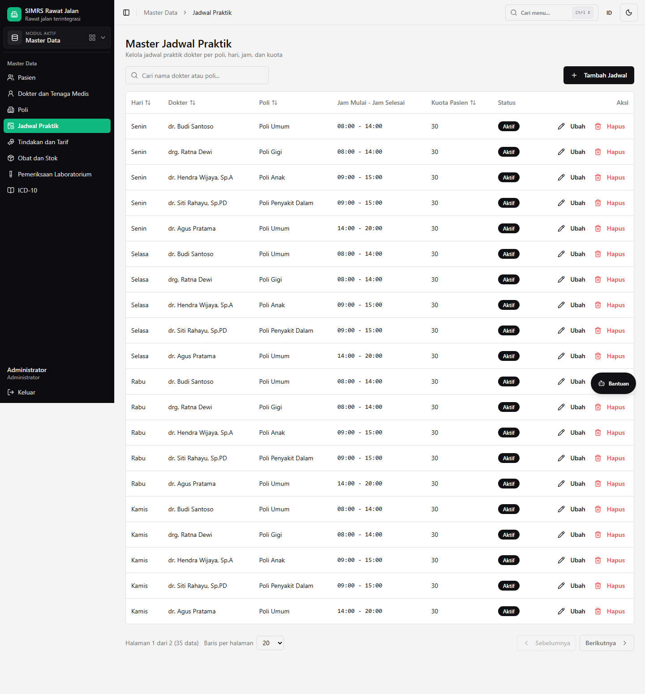
Jadwal praktikTindakan dan tarifObat, stok, harga
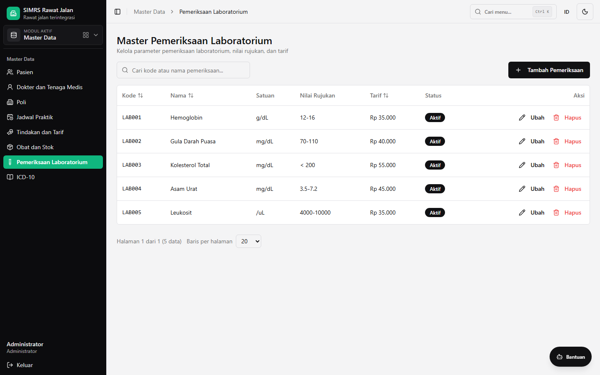
Master pemeriksaan laboratorium
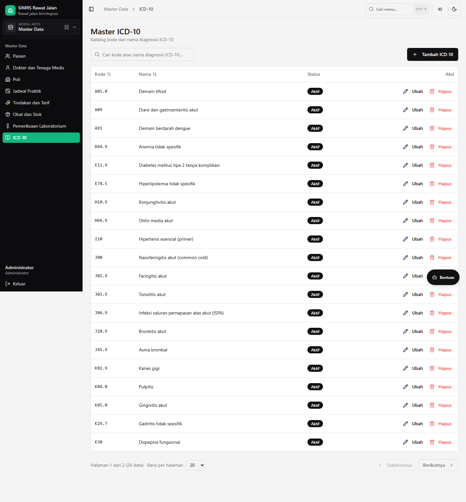
Master ICD-10
Bukti 3: tambah, ubah, hapus, validasi input, dan pencegahan duplikasi pada Master Pasien.
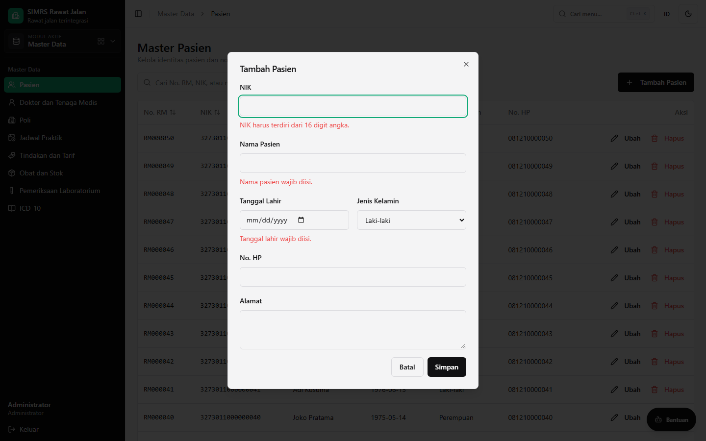
Validasi input: form kosong menampilkan pesan tiap kolom wajib
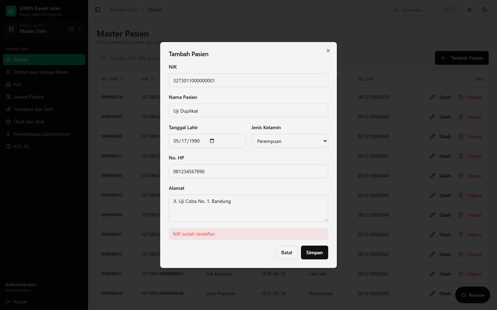
Pencegahan duplikasi: NIK yang sudah terdaftar ditolak ("NIK sudah terdaftar.")Tambah: pasien tersimpan dan No. RM terbentuk otomatis (RM000051)
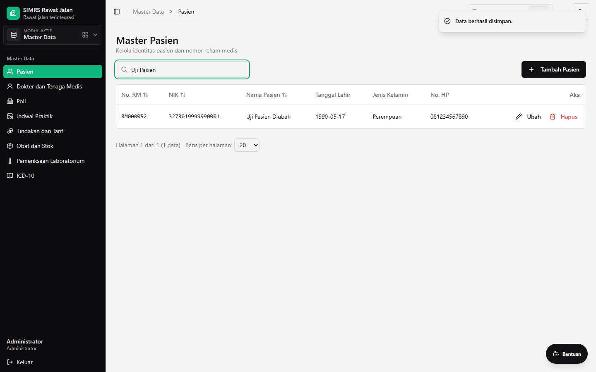
Ubah: nama pasien berubah
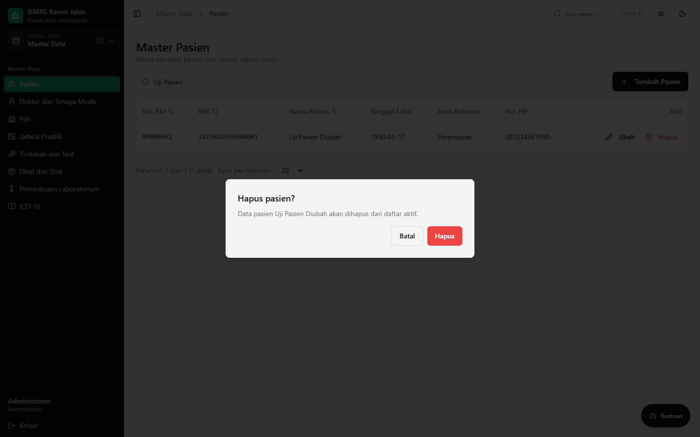
Hapus: dialog konfirmasi
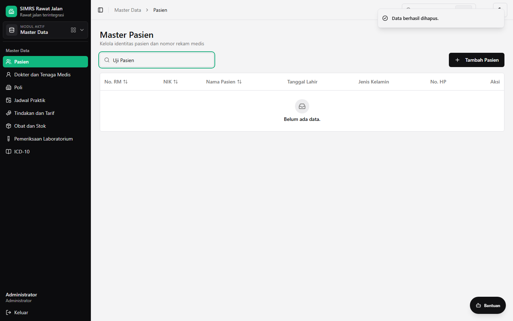
Hapus: data tidak lagi tampil (soft delete)
2. Pendaftaran dan Antrean Pasien – Yii dan React.js B.2
Butir pada instruksi dan pemenuhannya
Butir pada instruksi
Status
Bukti
Petugas dapat mencari pasien berdasarkan nomor rekam medis atau identitas.
Terpenuhi
Pencarian No. RM, NIK, atau nama
Petugas dapat melakukan pendaftaran kunjungan.
Terpenuhi
Tombol Daftarkan Kunjungan
Memilih poli dan dokter sesuai jadwal praktik.
Terpenuhi
Pilihan Poli dan Jadwal Dokter (jam dan kuota)
Sistem menghasilkan nomor antrean secara otomatis.
Terpenuhi
Tiket antrean setelah pendaftaran
Menampilkan status antrean pasien.
Terpenuhi
Antrean Poli: Menunggu, Diperiksa
Menyimpan riwayat kunjungan pasien.
Terpenuhi
Riwayat Kunjungan Pasien pada halaman pendaftaran
Tujuan
Mendaftarkan kunjungan, memilih poli dan dokter sesuai jadwal praktik, membuat nomor antrean otomatis, menampilkan status antrean, dan menyimpan riwayat kunjungan.
Pengguna dan hak akses
Petugas Pendaftaran dan Administrator.
Cara memakai
Buka Pendaftaran Kunjungan. Ketik No. RM, NIK, atau nama pada kolom pencarian; klik pasien pada hasil. Pasien belum terdaftar: klik Pasien Baru.
Pilih Tanggal Kunjungan, Poli, Jadwal Dokter (menampilkan dokter, jam praktik, kuota), dan Penjamin.
Klik Daftarkan Kunjungan. Tiket antrean (nomor kunjungan dan nomor antrean) tampil dan riwayat kunjungan pasien bertambah.
Buka Antrean Poli untuk memantau, memfilter, dan mengubah status. Panggil / Periksa mengubah status menjadi diperiksa; Batalkan membatalkan. Layar Display membuka tampilan antrean publik.
Pencarian pasien dengan No. RM RM000041Tiket antrean setelah pendaftaran; riwayat kunjungan menampilkan kunjungan baru (RJ202611150001)Antrean Poli: status Menunggu
3. Pemeriksaan dan Rekam Medis Elektronik – Yii dan React.js B.3
Butir pada instruksi dan pemenuhannya
Butir pada instruksi
Status
Bukti
Melihat daftar pasien yang menunggu pemeriksaan.
Terpenuhi
Worklist dokter
Menginput anamnesis dan keluhan pasien.
Terpenuhi
Tab Anamnesis
Menginput tanda-tanda vital.
Terpenuhi
Tab Tanda Vital
Menginput hasil pemeriksaan fisik.
Terpenuhi
Tab Pemeriksaan Fisik
Menentukan diagnosis utama dan diagnosis sekunder.
Terpenuhi
Tab Diagnosis
Menyimpan hasil pemeriksaan ke dalam riwayat rekam medis pasien.
Terpenuhi
Riwayat Rekam Medis
Tujuan
Dokter mencatat anamnesis, tanda vital, pemeriksaan fisik, serta diagnosis utama dan sekunder (ICD-10). Hasil masuk riwayat rekam medis pasien.
Pengguna dan hak akses
Dokter melihat pasien miliknya sendiri; Administrator melihat semua.
Cara memakai
Login sebagai dokter, buka Pemeriksaan Pasien. Cari pasien (nomor kunjungan, nama, atau No. RM), klik Periksa.
Halaman pemeriksaan memiliki tab Anamnesis, Tanda Vital, Pemeriksaan Fisik, Diagnosis, Tindakan, Resep, Laboratorium, dan Riwayat.
Isi keluhan utama dan anamnesis; isi tanda vital (tekanan darah, nadi, suhu, respirasi, SpO2, berat dan tinggi badan); isi pemeriksaan fisik; klik Simpan Pemeriksaan.
Tab Diagnosis: klik Tambah diagnosis ICD-10..., pilih kode. Pilihan pertama menjadi Utama, berikutnya sekunder. Klik Simpan Diagnosis.
Menu Riwayat Rekam Medis menampilkan seluruh kunjungan pasien.
Endpoint utama
Method
Path
Fungsi
GET
/transaction/pemeriksaan/worklist
Pasien menunggu milik dokter login
GET/PUT
/transaction/pemeriksaan/{kunjunganId}
Baca dan simpan pemeriksaan
PUT
/transaction/diagnosis/{kunjunganId}
Simpan diagnosis
GET
/transaction/riwayat-medis/{pasienId}
Riwayat lengkap rekam medis
Tabel database
t_pemeriksaan, t_diagnosis, m_icd10.
Aturan dan validasi
Worklist hanya berisi kunjungan milik dokter login; kunjungan dokter lain ditolak 403 (TC-EMR-01).
Tekanan diastolik harus lebih kecil dari sistolik (422, TC-EMR-02).
Diagnosis wajib tepat satu utama (422, TC-EMR-03).
Kunjungan yang sudah divalidasi kasir menolak perubahan (409); perubahan lain tercatat di audit log.
Riwayat Rekam Medis: pemeriksaan, tindakan, resep, hasil lab, diagnosis
4. Tindakan Medis – Yii dan React.js B.4
Butir pada instruksi dan pemenuhannya
Butir pada instruksi
Status
Bukti
Dokter dapat memilih tindakan berdasarkan master tindakan.
Terpenuhi
Daftar tindakan master
Sistem menampilkan tarif setiap tindakan.
Terpenuhi
Tarif tampil pada daftar
Dokter dapat menambahkan lebih dari satu tindakan dalam satu kunjungan.
Terpenuhi
Dua tindakan pada satu kunjungan
Tindakan yang diberikan tercatat sebagai komponen tagihan pasien.
Terpenuhi
Item Tindakan pada invoice
Tujuan
Dokter memilih tindakan dari master, tarif tampil otomatis, boleh lebih dari satu tindakan per kunjungan, dan setiap tindakan menjadi komponen tagihan.
Pengguna dan hak akses
Dokter dan Administrator.
Cara memakai
Pada halaman pemeriksaan, buka tab Tindakan.
Klik Pilih tindakan medis...; daftar menampilkan kode, nama, dan tarif. Pilih satu, atur Jumlah, klik Tambah.
Ulangi untuk tindakan lain. Tindakan dapat dibatalkan; tagihan dihitung ulang.
Endpoint utama
Method
Path
Fungsi
GET
/transaction/tindakan/{kunjunganId}
Daftar tindakan
POST
/transaction/tindakan/{kunjunganId}
Tambah tindakan (snapshot tarif)
DELETE
/transaction/tindakan/item/{id}
Batalkan tindakan; item invoice di-void
Tabel database
t_tindakan, m_tindakan, t_invoice_item.
Aturan dan validasi
Tarif disalin saat tindakan dicatat (snapshot); perubahan tarif master tidak mengubah tagihan lama (TC-EMR-04).
Pembatalan mengubah status ke batal tanpa menghapus baris fisik.
Lokasi kode
backend-yii/modules/transaction/tindakan/.
Bukti
Daftar tindakan master dengan tarifDua tindakan tercatat pada satu kunjungan
5. Farmasi dan Resep Obat – Yii dan React.js B.5
Butir pada instruksi dan pemenuhannya
Butir pada instruksi
Status
Bukti
Dokter dapat membuat resep berdasarkan hasil pemeriksaan.
Terpenuhi
Tab Resep
Resep mencakup nama obat, dosis, frekuensi, dan jumlah.
Terpenuhi
Form resep
Sistem melakukan validasi ketersediaan stok obat.
Terpenuhi
Resep melebihi stok ditolak
Petugas farmasi dapat memproses resep dan penyerahan obat.
Terpenuhi
Proses lalu Serahkan
Stok obat berkurang setelah proses penyerahan selesai.
Terpenuhi
Stok 500 menjadi 490
Sistem menyimpan riwayat penggunaan obat pasien.
Terpenuhi
Riwayat mutasi stok dan Riwayat Rekam Medis
Tujuan
Dokter membuat resep (obat, dosis, frekuensi, jumlah) dengan validasi stok. Petugas farmasi memproses dan menyerahkan obat; stok berkurang setelah penyerahan; riwayat penggunaan obat tersimpan.
Pengguna dan hak akses
Dokter membuat resep; Petugas Farmasi memproses dan menyerahkan; Administrator melihat semua.
Cara memakai
Dokter: tab Resep, klik Tambah obat ke resep... (daftar menampilkan stok dan harga), isi Dosis, Frekuensi, Jumlah, dan catatan, klik Simpan Resep.
Petugas farmasi: menu Pelayanan Resep. Cari resep; klik Proses (baru menjadi diproses), lalu Serahkan (diproses menjadi diserahkan).
Filter status memuat Baru dan diproses, Baru, Diproses, Diserahkan. Stok obat dan mutasinya dapat diperiksa di Master Data, Obat dan Stok.
Endpoint utama
Method
Path
Fungsi
POST
/transaction/resep
Buat resep, validasi stok
GET
/transaction/farmasi/antrean
Antrean resep berhalaman
PUT
/transaction/farmasi/{resepId}/proses
Ubah ke diproses
PUT
/transaction/farmasi/{resepId}/serahkan
Serahkan, kurangi stok, catat mutasi
GET
/transaction/riwayat-obat/{pasienId}
Riwayat obat pasien
Tabel database
t_resep, t_resep_detail, m_obat, t_stok_mutasi.
Aturan dan validasi
Jumlah melebihi stok ditolak 422 saat resep dibuat (TC-FAR-01).
Penyerahan mengunci baris resep dan obat (FOR UPDATE, urut id) dan CHECK (stok >= 0) menjaga stok tidak minus (D.2).
Resep yang sudah diserahkan tidak bisa diserahkan lagi.
Daftar obat dengan stok dan hargaResep tersimpan, status Baru, total Rp 15.000
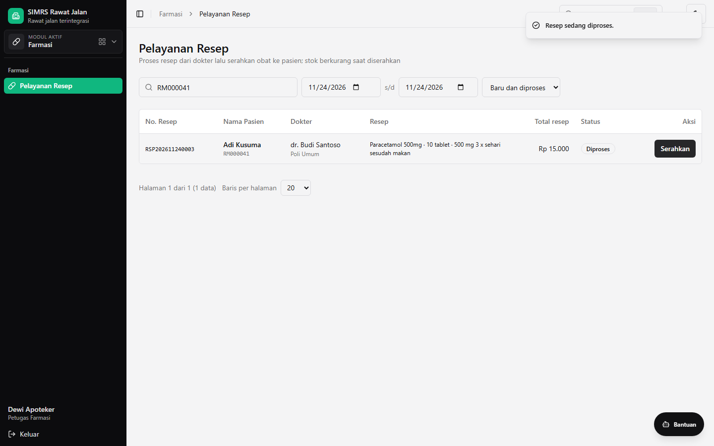
Farmasi: status Diproses, tombol Serahkan
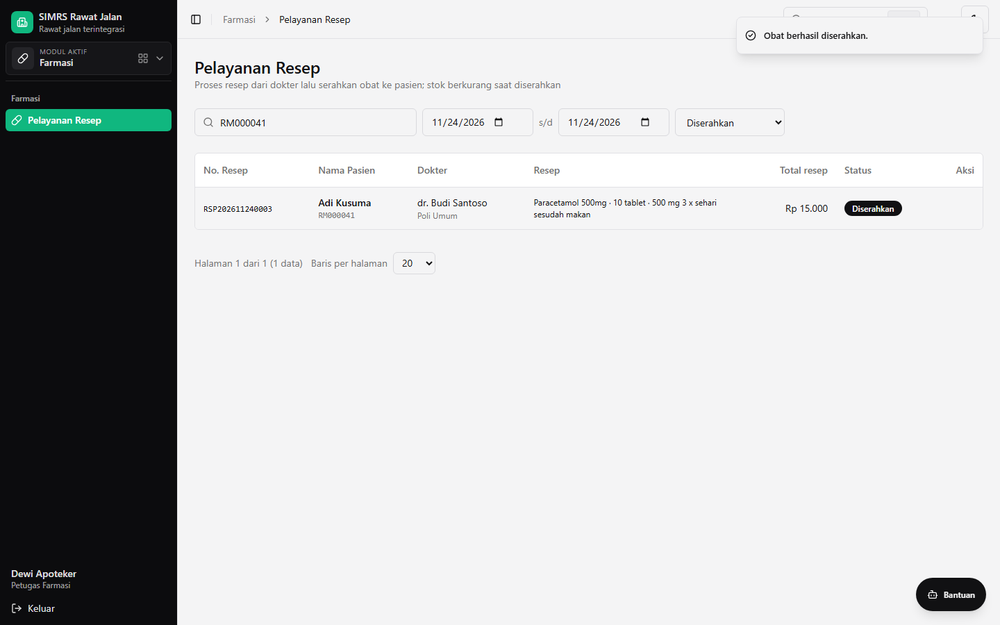
Filter Diserahkan: resep selesai diserahkanStok Paracetamol turun dari 500 menjadi 490 setelah penyerahan 10 tablet
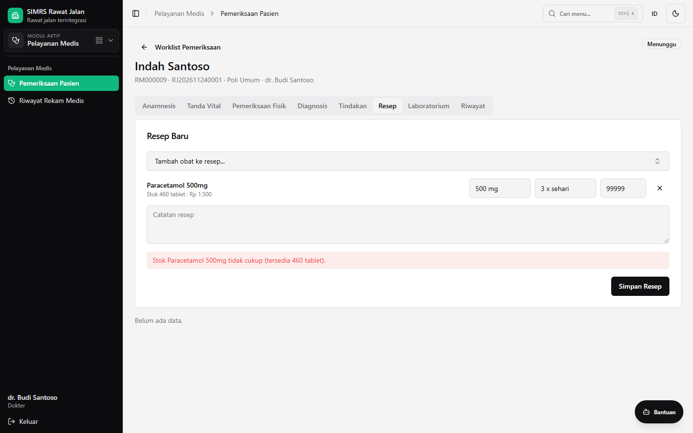
Validasi stok: jumlah 99999 ditolak dengan pesan stok tidak cukup
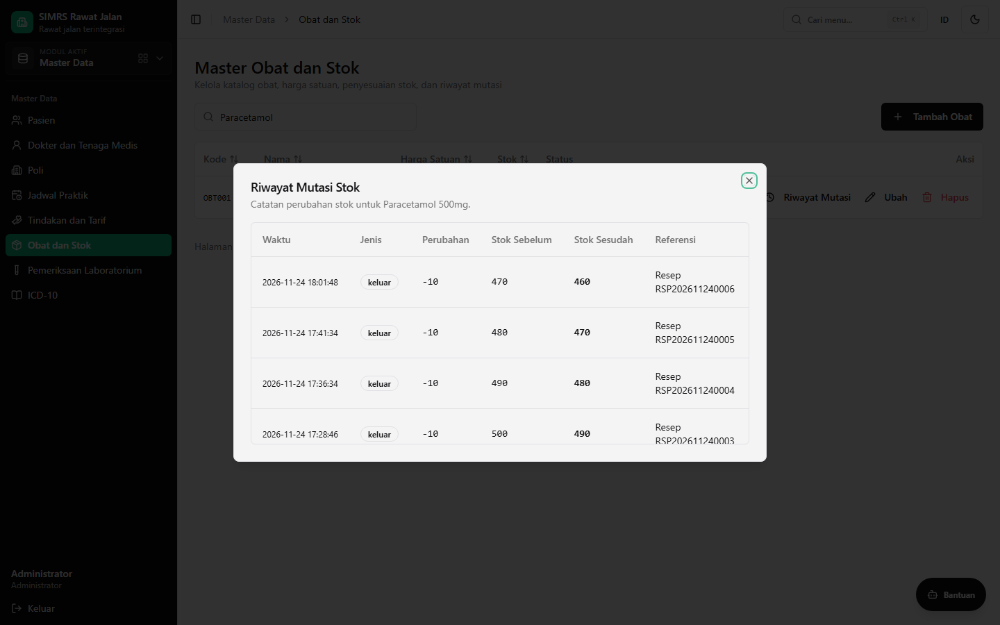
Riwayat mutasi stok: tiap penyerahan tercatat sebagai mutasi keluar dengan stok sebelum dan sesudah (baris atas berasal dari resep uji lain sehingga stok saat gambar ini 460)
6. Pemeriksaan Penunjang – Yii, React.js, dan Node.js B.6
Butir pada instruksi dan pemenuhannya
Butir pada instruksi
Status
Bukti
Dokter dapat membuat permintaan pemeriksaan laboratorium.
Terpenuhi
Tab Laboratorium, Kirim Order
Petugas laboratorium dapat melihat daftar permintaan pemeriksaan.
Terpenuhi
Worklist laboratorium
Petugas dapat menginput hasil pemeriksaan.
Terpenuhi
Kolom Hasil dan flag otomatis
Hasil pemeriksaan dapat diakses kembali oleh dokter melalui riwayat kunjungan pasien.
Terpenuhi
Riwayat Rekam Medis menampilkan hasil lab
Sediakan layanan API untuk mendukung komunikasi atau integrasi data pemeriksaan penunjang.
Terpenuhi
API Node /api/lab/orders dan /api/lab/results (bagian C)
Tujuan
Dokter membuat order laboratorium, petugas lab melihat daftar dan menginput hasil, dan dokter membaca hasil di riwayat kunjungan. Sistem eksternal memakai API Node untuk membaca order dan mengirim hasil.
Pengguna dan hak akses
Dokter membuat order; Petugas Laboratorium menginput hasil; sistem eksternal memakai header X-Api-Key.
Petugas lab: menu Pemeriksaan Laboratorium. Klik baris "N pemeriksaan" untuk membuka rincian, isi kolom Hasil tiap pemeriksaan, klik tombol simpan di sampingnya.
Flag dihitung otomatis dari nilai rujukan. Setelah seluruh hasil terisi status order menjadi Selesai (pilih filter status Selesai untuk melihatnya).
Dokter melihat hasil pada Riwayat Rekam Medis. Sistem eksternal memakai GET /api/lab/orders dan POST /api/lab/results pada service Node.
Dokter memilih Hemoglobin dan Leukosit, total tarif tampilOrder terkirim ke laboratoriumWorklist petugas laboratorium: order berstatus Diminta
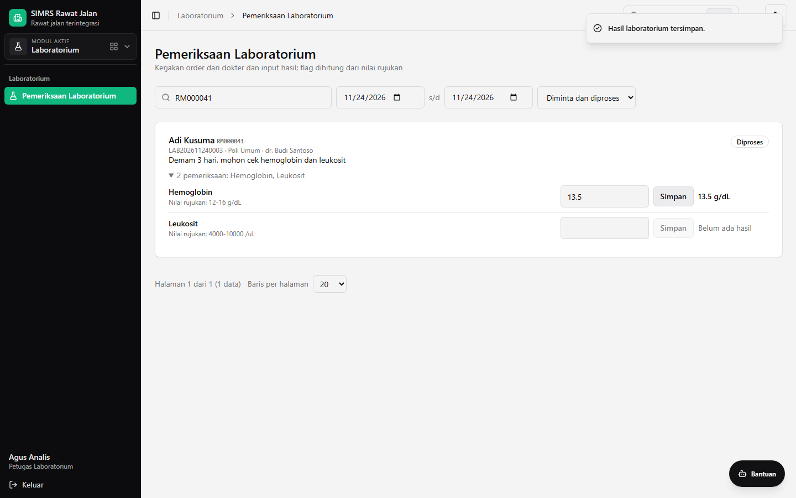
Hasil pertama tersimpanOrder Selesai: Leukosit 12500 diberi flag Tinggi terhadap rujukan 4000 sampai 10000
7. Billing dan Pembayaran – Yii dan React.js B.7
Butir pada instruksi dan pemenuhannya
Butir pada instruksi
Status
Bukti
Biaya pendaftaran.
Terpenuhi
Item sumber Pendaftaran
Biaya tindakan medis.
Terpenuhi
Item sumber Tindakan
Biaya pemeriksaan penunjang.
Terpenuhi
Item sumber Laboratorium
Biaya obat.
Terpenuhi
Item sumber Obat
Sistem menghitung total tagihan secara otomatis.
Terpenuhi
Total pada detail invoice
Menampilkan rincian biaya pelayanan.
Terpenuhi
Detail invoice per sumber
Mendukung pembayaran tunai dan non-tunai dalam bentuk simulasi.
Terpenuhi
Dialog Catat Pembayaran
Mendukung status pembayaran belum dibayar, dibayar sebagian, dan lunas.
Terpenuhi
Tiga status pada daftar tagihan
Mencatat pembayaran secara bertahap.
Terpenuhi
Dua pembayaran pada satu invoice
Mencegah pencatatan transaksi pembayaran ganda.
Terpenuhi
Skenario D.3
Menyediakan riwayat pembayaran pasien.
Terpenuhi
Tab Riwayat Pembayaran
Menghasilkan invoice dan bukti pembayaran yang dapat dicetak.
Terpenuhi
Halaman cetak invoice dan bukti bayar
Tujuan
Menggabungkan biaya pendaftaran, tindakan, pemeriksaan penunjang, dan obat dalam satu tagihan. Mendukung pembayaran tunai dan non-tunai (simulasi), bertahap, tiga status pembayaran, riwayat pembayaran, serta cetak invoice dan bukti bayar.
Pengguna dan hak akses
Kasir dan Administrator.
Cara memakai
Login sebagai kasir, buka Tagihan dan Pembayaran. Tiga tab: Daftar Tagihan, Belum Ditagih, Riwayat Pembayaran.
Tab Belum Ditagih: cari pasien, klik Buat Invoice. Dialog Buat Invoice dan Validasi Kunjungan menampilkan catatan peringatan (misalnya lab belum selesai); konfirmasi untuk melanjutkan. Kunjungan menjadi Valid sehingga dokter tidak dapat menambah order.
Tab Daftar Tagihan: Detail menampilkan rincian biaya per sumber dan audit log; Cetak membuka invoice; Bayar membuka dialog Catat Pembayaran.
Pilih Metode Pembayaran (Tunai atau Non-Tunai), isi Jumlah Bayar (boleh sebagian, atau klik Lunasi sisa), isi No. Referensi bila non-tunai, klik Proses Pembayaran.
Revisi: tombol Unvalid membuka kunci agar dokter dapat mengubah data; tagihan tersinkron otomatis, lalu kasir menekan Valid lagi.
Tab Riwayat Pembayaran: tombol Bukti Bayar membuka kwitansi. Halaman cetak memiliki Cetak dan Export PDF.
Tab Belum DitagihDialog Buat Invoice dan Validasi KunjunganDetail invoice INV202611150001: enam item dari empat sumber biaya, total Rp 90.000, audit logDialog Catat Pembayaran
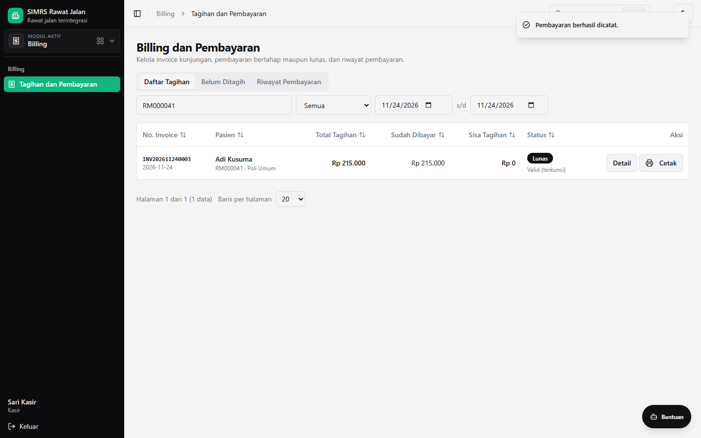
Status Lunas setelah dua pembayaran
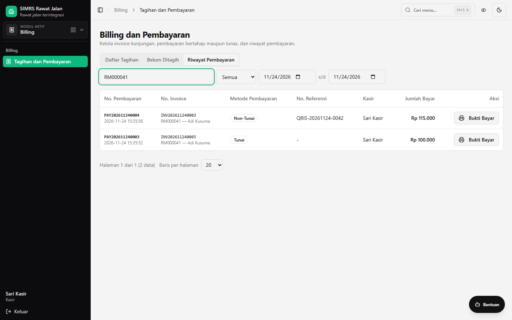
Riwayat pembayaran: tunai lalu non-tunai dengan nomor referensi
8. Dashboard dan Laporan – React.js, Yii, dan Node.js B.8
Butir pada instruksi dan pemenuhannya
Butir pada instruksi
Status
Bukti
Jumlah kunjungan pasien.
Terpenuhi
Kartu ringkasan dan tab Kunjungan
Jumlah kunjungan berdasarkan poli.
Terpenuhi
Grafik kunjungan per poli
Jumlah tindakan medis.
Terpenuhi
Tab Tindakan
Ringkasan pendapatan.
Terpenuhi
Tab Pendapatan
Rekap penggunaan obat.
Terpenuhi
Tab Obat
Status pembayaran.
Terpenuhi
Tab Tagihan
Sediakan fitur filter berdasarkan periode dan kemampuan menampilkan rincian data yang relevan.
Terpenuhi
Filter periode dan tabel rincian
Data dashboard diperoleh melalui layanan API yang disediakan oleh backend.
Terpenuhi
API Node /api/dashboard/*
Tujuan
Menampilkan jumlah kunjungan, kunjungan per poli, jumlah tindakan, ringkasan pendapatan, rekap obat, dan status pembayaran, dengan filter periode dan rincian data.
Pengguna dan hak akses
Semua role melihat dashboard. Data keuangan (pendapatan, tagihan) hanya untuk role dengan izin menu Data Keuangan Dashboard.
Cara memakai
Buka Dashboard.
Pilih periode lewat Hari Ini, 7 Hari, 30 Hari, Bulan Ini, atau isi tanggal dari dan sampai, pilih dokter dan penjamin, klik Terapkan.
Tab rincian: Kunjungan, Tindakan, Pendapatan, Obat, Tagihan (tabel berhalaman). Export PDF dan Export Excel mengunduh laporan.
Endpoint utama
Method
Path
Fungsi
GET
/api/dashboard/summary
Ringkasan periode
GET
/api/dashboard/kunjungan-per-poli
Kunjungan per poli
GET
/api/dashboard/tindakan
Rekap tindakan
GET
/api/dashboard/obat
Rekap penggunaan obat
GET
/api/dashboard/pendapatan | pembayaran
Keuangan (butuh izin, tanpa izin 403)
GET
/api/dashboard/detail/{jenis}
Rincian berhalaman
Tabel database
Membaca tabel transaksi lewat user database read-only simrs_readonly.
Aturan dan validasi
Node tidak menulis data; semua penulisan lewat Yii.
Periode terbalik ditolak 422 oleh validasi Zod (TC-DSH-01).
Index khusus dashboard mempercepat agregasi (D.6).
Dashboard periode Hari Ini: kartu ringkasan, kunjungan per poli, pendapatan, status pembayaran
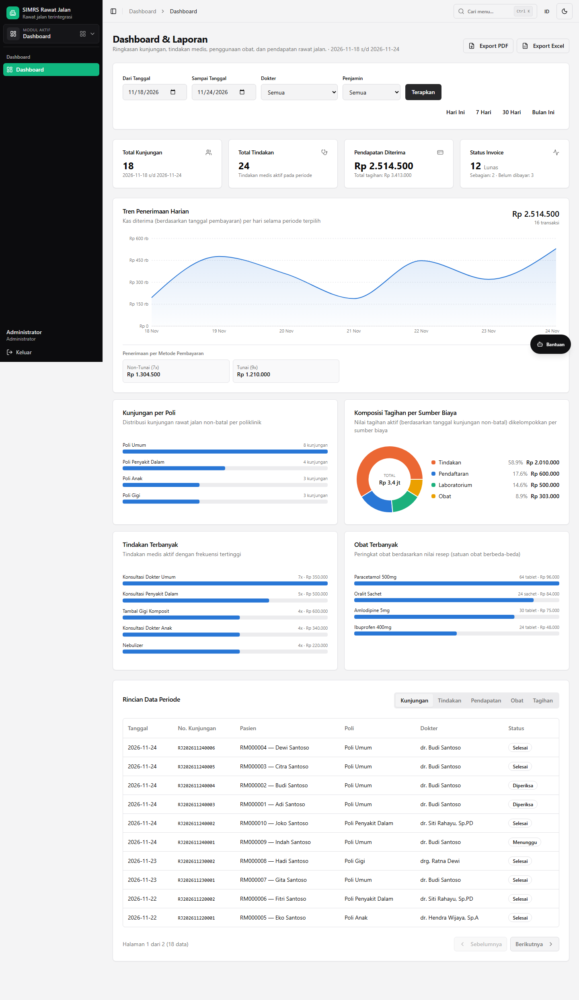
Filter periode 7 HariRincian Kunjungan
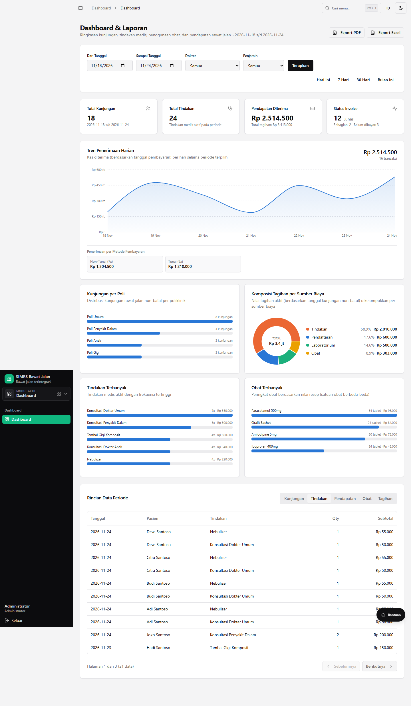
Rincian Tindakan medis
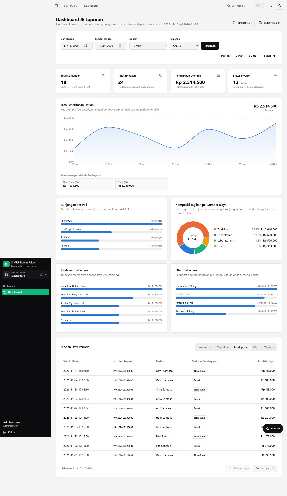
Rincian Pendapatan
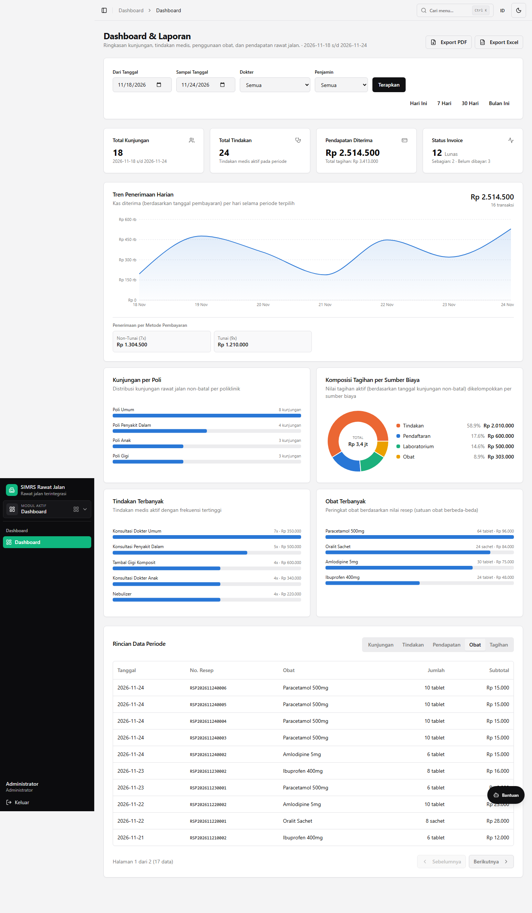
Rekap penggunaan Obat
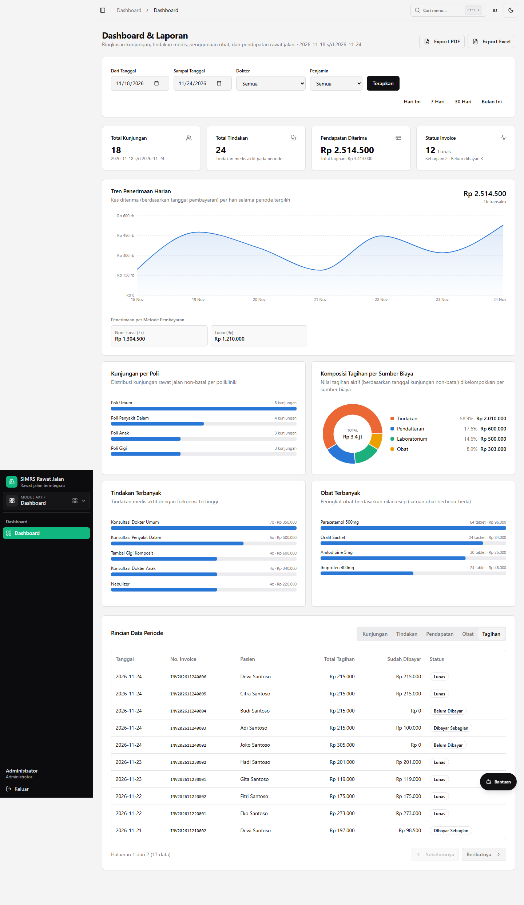
Rincian Tagihan dan status pembayaran
9. Pengelolaan Pengguna dan Hak Akses – Yii dan React.js B.9
Butir pada instruksi dan pemenuhannya
Butir pada instruksi
Status
Bukti
Administrator.
Terpenuhi
Akun admin
Petugas Pendaftaran.
Terpenuhi
Akun pendaftaran
Dokter.
Terpenuhi
Akun dokter
Petugas Farmasi.
Terpenuhi
Akun farmasi
Petugas Laboratorium.
Terpenuhi
Akun laboratorium
Kasir.
Terpenuhi
Akun kasir
Setiap pengguna hanya dapat mengakses fitur sesuai dengan kewenangannya.
Terpenuhi
Matriks hak akses, sidebar per role, halaman Akses ditolak
Tujuan
Membatasi setiap pengguna pada fitur sesuai kewenangannya. Yii menerbitkan JWT HS256; Yii, Node, dan React memeriksanya.
Pengguna dan hak akses
Enam role: Administrator, Petugas Pendaftaran, Dokter, Petugas Farmasi, Petugas Laboratorium, Kasir. Hak akses per menu terdiri dari baca (R), tambah (C), ubah (U), dan hapus (D). Matriks nyata dari database ada pada bagian Bukti di bawah.
Cara memakai
Buka http://localhost:5173/login, isi Username dan Password, klik Masuk.
Sidebar hanya memuat modul dan menu yang diizinkan untuk role itu.
Administrator membuka modul Sistem, menu Hak Akses Role, mengubah izin per role, lalu menyimpan.
Membuka halaman tanpa izin menampilkan Akses ditolak; API membalas 403.
Matriks hak akses per roleRole Pendaftaran membuka /transaction/billing: Akses ditolak
Menu setelah login berbeda untuk tiap role:
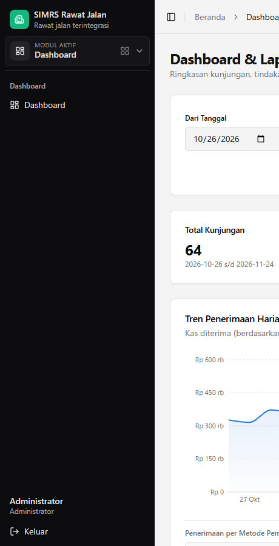
AdministratorPetugas Pendaftaran
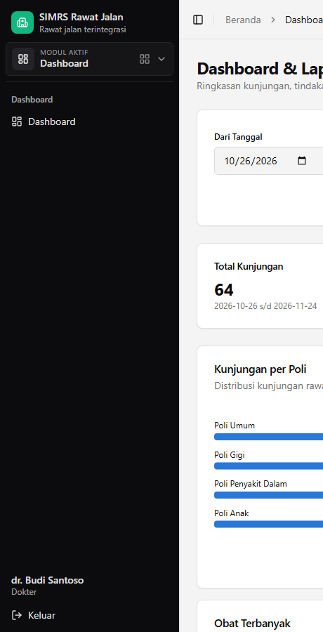
DokterPetugas Farmasi
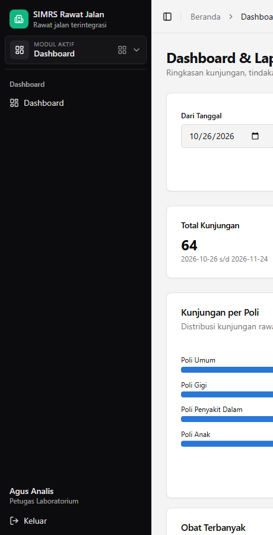
Petugas Laboratorium
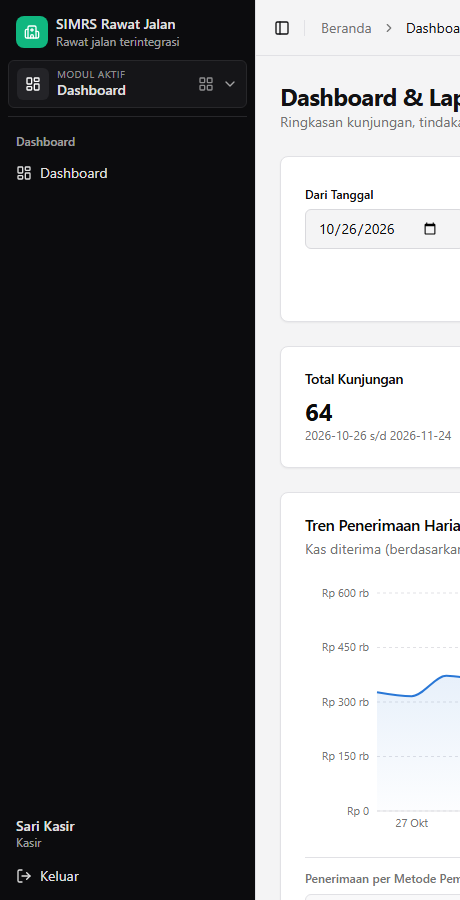
Kasir
Matriks hak akses (dibaca dari database setelah seed)
R = baca, C = tambah, U = ubah, D = hapus, tanda minus = tanpa akses.
Menu
Administrator
Pendaftaran
Dokter
Farmasi
Laboratorium
Kasir
Dashboard
RCUD
R
R
R
R
R
Data Keuangan Dashboard
RCUD
-
-
-
-
R
Pendaftaran Kunjungan
RCUD
RCUD
-
-
-
-
Antrean Poli
RCUD
RU
RU
-
-
-
Pemeriksaan Pasien
RCUD
-
RCUD
-
-
-
Riwayat Rekam Medis
RCUD
-
R
-
-
-
Pelayanan Resep
RCUD
-
-
RCU
-
-
Pemeriksaan Laboratorium
RCUD
-
-
-
RCU
-
Tagihan dan Pembayaran
RCUD
-
-
-
-
RCU
Pasien
RCUD
RCU
-
-
-
-
Dokter dan Tenaga Medis
RCUD
R
-
-
-
-
Poli
RCUD
R
-
-
-
-
Jadwal Praktik
RCUD
R
-
-
-
-
Tindakan dan Tarif
RCUD
-
R
-
-
-
Obat dan Stok
RCUD
-
R
RCUD
-
-
Pemeriksaan Laboratorium
RCUD
-
R
-
RCUD
-
ICD-10
RCUD
-
R
-
-
-
Pengguna
RCUD
-
-
-
-
-
Role
RCUD
-
-
-
-
-
Modul
RCUD
-
-
-
-
-
Menu
RCUD
-
-
-
-
-
Hak Akses Role
RCUD
-
-
-
-
-
C. Pengembangan Backend Services – Node.js
Selain business logic utama SIMRS yang dikelola melalui Yii, buat backend services menggunakan Node.js untuk mendukung kebutuhan layanan aplikasi.
Butir pada instruksi dan pemenuhannya
Butir pada instruksi
Status
Bukti
REST API untuk mendukung komunikasi dengan layanan pemeriksaan penunjang atau sistem eksternal.
Terpenuhi
GET /api/lab/orders, POST /api/lab/results (Lampiran A, bukti di bawah)
API untuk mendukung kebutuhan dashboard atau layanan pendukung aplikasi.
Terpenuhi
/api/dashboard/* (7 endpoint)
Middleware untuk validasi request dan penanganan autentikasi.
Terpenuhi
auth.ts, validate.ts, error-handler.ts; 401 tanpa token, 422 validasi
Error handling dan response API dengan format yang konsisten.
Terpenuhi
Format success, message, data atau errors pada semua respons
Dokumentasi endpoint API yang dibuat.
Terpenuhi
Lampiran A dan service-node/openapi.yaml
Jelaskan bagaimana Node.js berkomunikasi dengan Yii dan database, serta bagaimana pembagian tanggung jawab data dan business logic di antara keduanya.
Terpenuhi
Subbagian di bawah
Bagaimana Node.js berkomunikasi dengan Yii dan database
React berkomunikasi dengan Yii (seluruh operasi bisnis) dan dengan Node (dashboard) lewat REST JSON dan JWT. Yii menerbitkan JWT; Node memverifikasinya dengan secret yang sama. Sistem lab eksternal memanggil Node dengan X-Api-Key. Node meneruskan hasil lab ke Yii. Yii membaca dan menulis PostgreSQL dan memegang migrasi. Node menulis hanya t_integration_outbox dan membaca sisanya sebagai simrs_readonly.
Urutan nyata satu kunjungan, dari pendaftaran sampai pembayaran:
React mengirim POST /transaction/pendaftaran ke Yii; Yii mengunci jadwal dan nomor antrean, lalu menulis t_kunjungan ke PostgreSQL.
Dokter menyimpan pemeriksaan, diagnosis, tindakan, resep, dan order lab lewat Yii; Yii menyalin tarif dan harga dan mencatat audit log.
Hasil lab diinput petugas lewat Yii, atau dikirim sistem eksternal ke Node (POST /api/lab/results); Node meneruskan ke Yii dan memakai outbox bila Yii gagal.
Farmasi memproses resep lewat Yii; Yii mengunci obat, mengurangi stok, dan mencatat mutasi.
Kasir membentuk invoice dan mencatat pembayaran lewat Yii dengan Idempotency-Key.
Dashboard di React memanggil Node; Node membaca PostgreSQL sebagai simrs_readonly dan mengembalikan agregasi.
Pembagian tanggung jawab data dan business logic
Aspek
backend-yii
service-node
Migrasi database
Pemilik tunggal (backend-yii/migrations/)
Tidak mengelola migrasi
Autentikasi dan RBAC
Menerbitkan JWT, kelola user, role, menu, hak akses
Memverifikasi JWT, memeriksa izin dashboard, menerima X-Api-Key
Endpoint idempoten PUT /transaction/hasil-lab/{id}, hitung flag
Menerima push eksternal, validasi, forward ke Yii, outbox, retry
Dashboard
Tidak menanggung agregasi berat
7 endpoint agregasi lewat simrs_readonly
Duplikasi logic dicegah: flag lab dan status order hanya dihitung di Yii; tagihan dan revisi billing hanya di Yii; Node hanya meneruskan dan menjumlahkan kolom snapshot. Kedua layanan memakai format respons yang sama.
Bukti implementasi backend services Node.js C
Tujuan
Menyediakan REST API pendukung: integrasi hasil lab untuk sistem eksternal dan API agregasi dashboard. Node bukan pemilik business logic transaksi.
Pengguna dan hak akses
Dashboard memakai JWT dari Yii; integrasi lab memakai header X-Api-Key.
Cara memakai
Jalankan docker compose up -d; service di http://localhost:3000.
Ambil JWT dari POST /system/auth/login pada Yii, kirim sebagai Authorization: Bearer ke /api/dashboard/*.
Dokumentasi: /openapi.yaml dan docs/api/node.md.
Endpoint utama
Method
Path
Fungsi
GET
/health
Status service
GET
/api/lab/orders
Daftar order lab
POST
/api/lab/results
Kirim hasil lab
GET
/api/dashboard/*
API dashboard read-only
Tabel database
Membaca lewat simrs_readonly; menulis hanya t_integration_outbox.
Aturan dan validasi
Middleware: verifikasi JWT, verifikasi API key, validasi Zod, penanganan error.
Format respons seragam: success, message, data atau errors.
Panggilan HTTP nyata ke service Node: 200, 401 tanpa token, 401 tanpa API key, 422 validasi, dan status kontainer
D. Skenario Permasalahan Teknis
Lakukan analisis dan implementasi penanganan terhadap beberapa kondisi berikut. Kandidat diminta menunjukkan implementasi atau bukti pendekatan teknis yang digunakan untuk menangani permasalahan tersebut.
Setiap skenario memuat pertanyaan pada instruksi, masalah, solusi berlapis, lokasi kode, dan bukti. Sumber analisis: docs/technical-scenarios.md.
1. Duplikasi Pendaftaran D.1
Duplikasi Pendaftaran: Dua petugas melakukan pendaftaran pasien yang sama pada waktu hampir bersamaan. Bagaimana sistem mencegah data kunjungan atau nomor antrean ganda?
Analisis internal: Pendaftaran Ganda dan Balapan Nomor Antrean.
Masalah
Dua petugas atau dua klik paralel mendaftarkan pasien yang sama pada poli dan tanggal yang sama, atau banyak pasien mendaftar bersamaan ke jadwal dokter dengan kuota terbatas, sehingga berisiko menimbulkan kunjungan ganda, nomor antrean ganda, atau melewati kuota.
Solusi Berlapis
Row lock counter & jadwal: transaksi pendaftaran mengunci jadwal dokter (FOR UPDATE) untuk memverifikasi kuota serta menaikkan counter antrean/nomor kunjungan secara atomik lewat SequenceService (INSERT ... ON CONFLICT DO UPDATE ... RETURNING).
Pengaman PostgreSQL:
Partial unique index uq_t_kunjungan_pasien_poli_tgl_aktif pada (pasien_id, poli_id, tgl_kunjungan) WHERE status <> 'batal' menolak pendaftaran aktif ganda (tetap mengizinkan daftar ulang bila kunjungan sebelumnya dibatalkan).
Unique index uq_t_kunjungan_antrean pada (poli_id, dokter_id, tgl_kunjungan, no_antrean) menolak nomor antrean kembar.
PendaftaranServiceTest memverifikasi pendaftaran ganda (409), kuota penuh (409), dan daftar ulang setelah batal (201).
node tests/concurrency/pendaftaran.mjs menjalankan pendaftaran paralel pada pasien sama dan pada kuota terbatas: tepat 1 sukses untuk pasien sama dan jumlah sukses tidak pernah melebihi kuota tanpa nomor antrean ganda.
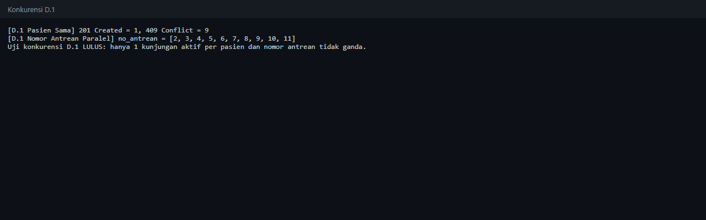
Bukti D.1: 10 pendaftaran paralel pasien sama, 1 sukses dan 9 ditolak 409; nomor antrean unik
2. Konkurensi Stok Obat D.2
Konkurensi Stok Obat: Dua transaksi farmasi memproses obat yang sama ketika stok hanya tersisa untuk satu transaksi. Bagaimana sistem memastikan stok tidak menjadi minus?
Analisis internal: Balapan Stok Obat saat Penyerahan Farmasi.
Masalah
Dua resep yang membutuhkan obat yang sama (atau satu resep yang diklik "Serahkan" dua kali bersamaan) dieksekusi paralel ketika stok hanya cukup untuk satu resep, berisiko menyebabkan stok minus atau mutasi keluar tercatat ganda.
Solusi Berlapis
Row lock terurut (FOR UPDATE): FarmasiService::serahkan() mengunci baris t_resep (FOR UPDATE) dan mengunci semua baris m_obat yang terlibat secara terurut berdasarkan id ASC (FOR UPDATE) untuk mencegah deadlock.
Validasi status & stok di dalam transaksi: memastikan resep berstatus diproses, stok cukup untuk seluruh item, lalu mengurangi stok dan mencatat t_stok_mutasi (jenis = 'keluar') secara atomik.
Pengaman PostgreSQL: constraint CHECK (stok >= 0) pada m_obat, CHECK (stok_sesudah >= 0) pada t_stok_mutasi, dan CHECK (status <> 'diserahkan' OR diserahkan_at IS NOT NULL) pada t_resep.
Dua resep masing-masing butuh 5 tablet saat stok 5 diserahkan bersamaan → status [200, 409], stok akhir 0, tepat 1 mutasi keluar.
Resep sama diserahkan 5 kali bersamaan → tepat 1 sukses (200), 4 ditolak (409), stok berkurang sekali.
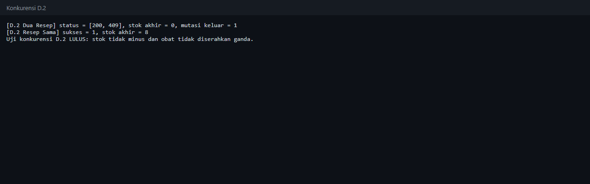
Bukti D.2: dua resep berebut stok, satu sukses, satu 409, stok akhir 0Validasi stok di UI saat membuat resep
3. Pembayaran Ganda D.3
Pembayaran Ganda: Terjadi gangguan jaringan setelah kasir melakukan pembayaran. Ketika transaksi dicoba kembali, bagaimana sistem memastikan pembayaran tidak tercatat dua kali?
Analisis internal: Pencegahan Pembayaran Ganda dan Overpayment.
Masalah
Kasir menekan tombol bayar dua kali, koneksi timeout sehingga klien melakukan retry, atau dua kasir memproses pembayaran paralel untuk tagihan yang sama, berisiko menimbulkan pembayaran ganda atau total_bayar > total.
Solusi Berlapis
Idempotency-Key dari klien: BillingPage.tsx / BayarDialog.tsx membuat satu UUID Idempotency-Key saat dialog bayar dibuka dan mengirim ulang key yang sama pada setiap retry (pembayaran.api.ts).
Validasi & lock di Yii: PembayaranService::bayar() mewajibkan header Idempotency-Key (422 bila kosong), mengunci baris t_invoice dengan SELECT ... FOR UPDATE, memeriksa ulang keberadaan idempotency_key setelah lock (serta menangkap IntegrityException sebagai pengaman terakhir). Key yang sama pada invoice yang sama mengembalikan pembayaran lama dengan HTTP 200, bukan membuat baris baru; key sama untuk invoice berbeda ditolak 409.
Pengaman PostgreSQL: unique index uq_t_pembayaran_idempotency_key dan CHECK (total_bayar >= 0 AND total_bayar <= total) pada t_invoice.
[D.3 Idempotency Paralel] 5 request paralel dengan key sama: status = [200, 200, 200, 200, 201], unik no_pembayaran = 1, total_bayar = 40000, jumlah baris pembayaran = 1.
[D.3 Race Sisa Tagihan] 5 request paralel dengan key berbeda untuk sisa penuh 60000: status = [201, 409, 409, 409, 409], total_bayar = 100000, status_invoice = lunas.
transaction-billing.test.tsx memverifikasi retry setelah error jaringan mengirim Idempotency-Key yang identik.
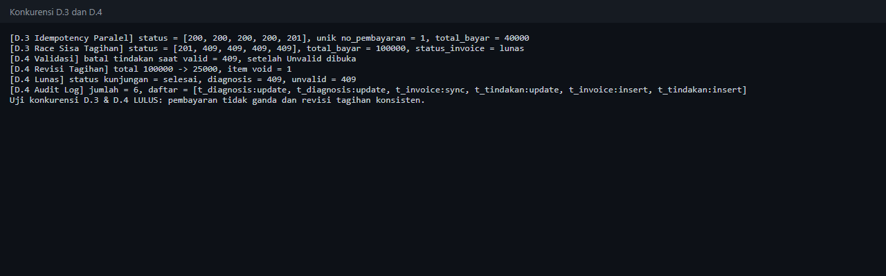
Bukti D.3 dan D.4: lima percobaan key sama hanya mencatat satu pembayaran; revisi tagihan dan audit log
4. Perubahan Data Pemeriksaan D.4
Perubahan Data Pemeriksaan: Dokter mengubah diagnosis atau tindakan setelah billing dibuat. Bagaimana sistem menangani perubahan tersebut agar tagihan tetap konsisten dan riwayat perubahan dapat ditelusuri?
Analisis internal: Revisi Tagihan dan Audit Log saat Diagnosis atau Tindakan Berubah.
Masalah
Dokter membatalkan atau menambah tindakan, resep, atau order lab setelah invoice sudah diterbitkan, atau mengubah diagnosis setelah tagihan lunas. Tanpa mekanisme revisi yang terkontrol, tagihan menjadi tidak sinkron atau histori keuangan hilang.
Solusi Berlapis
Item berbasis sumber & void: setiap baris t_invoice_item menyimpan (sumber, referensi_id) dengan partial unique index uq_t_invoice_item_aktif WHERE is_void = false. Saat tindakan/resep/lab berubah, BillingSyncService::sinkronkan() mengunci t_invoice (FOR UPDATE), menandai item lama is_void = true disertai alasan_void (wajib non-kosong lewat check constraint chk_t_invoice_item_void), menambahkan item baru, dan menghitung ulang total serta status.
Validasi kasir (kunci Valid/Unvalid): membuat invoice sekaligus menandai kunjungan is_valid = true (migrasi m261124_010000_add_validasi_to_t_kunjungan). Selama valid, order baru dokter (pemeriksaan, diagnosis, tindakan, resep, order lab) ditolak 409, sedangkan order yang sudah ada tetap bisa diproses farmasi dan laboratorium. Bila pasien perlu transaksi tambahan, kasir menekan Unvalid (PUT /transaction/invoice/{id}/unvalid). Perubahan lalu disinkronkan ke invoice, dan kasir menekan Valid lagi (PUT /transaction/invoice/{id}/valid). Sebelum membuat invoice atau Valid, kasir melihat catatan merah dari GET /transaction/invoice/peringatan (order lab belum selesai, resep belum diserahkan, pasien belum diperiksa). Kasir tetap boleh melanjutkan setelah konfirmasi.
Lunas = selesai permanen: saat invoice lunas (dari pembayaran, invoice bernilai 0, atau revisi tagihan), ValidasiKunjunganService::selesaikanKarenaLunas() mengubah kunjungan menjadi selesai dengan jejak di t_kunjungan_status_log. Kunjungan selesai tidak bisa di-Unvalid dan hanya tampil di billing. Status selesai tidak bisa lagi dipilih manual dari antrean. Revisi yang membuat total < total_bayar tetap ditolak 409 dan di-rollback utuh.
Audit log menyeluruh: AuditLogBehavior (terpasang pada Pemeriksaan, TindakanKunjungan, Invoice, InvoiceItem) serta AuditLog::catat() pada BillingSyncService::sinkronkan() dan PemeriksaanService::simpanDiagnosis() mencatat data_lama & data_baru (JSONB) di t_audit_log.
BillingSyncServiceTest (6 test): perubahan ditolak selama valid dan baru diizinkan setelah Unvalid, void item disertai penurunan total, penambahan tindakan/resep/lab setelah Unvalid, pelunasan otomatis saat total turun menyamai total_bayar (kunjungan ikut selesai), rollback 409 bila total < total_bayar, dan kunci permanen setelah lunas.
ValidasiKunjunganServiceTest (3 test): isi peringatan kasir sampai semua order tuntas, siklus invoice → Unvalid → Valid, dan kunjungan lunas yang hilang dari antrean, worklist lab, dan antrean farmasi, tetapi tetap tampil di daftar invoice.
node tests/concurrency/pembayaran.mjs:
[D.4 Validasi]batal tindakan saat valid = 409, setelah Unvalid dibuka
Rincian invoice dan audit log perubahan pada dialog Detail
5. Gangguan Integrasi D.5
Gangguan Integrasi: Salah satu layanan API tidak dapat diakses. Bagaimana aplikasi menangani kegagalan komunikasi tanpa menyebabkan kehilangan atau ketidaksesuaian data?
Analisis internal: Integrasi Hasil Lab Tahan Gagal (Outbox + Idempotensi).
Masalah
Alat/sistem lab eksternal mengirim hasil ke service-node saat backend-yii sedang tidak dapat diakses atau mengembalikan 5xx, atau mengirim payload yang sama berulang kali (retry). Hasil tidak boleh hilang dan tidak boleh terproses ganda.
Solusi Berlapis
Transactional Outbox di Node: POST /api/lab/results meneruskan payload ke Yii (PUT /transaction/hasil-lab/{detailId}) membawa header Idempotency-Key. Bila Yii gagal/timeout/5xx, Node menyimpan pesan ke t_integration_outbox (status = 'pending', idempotency_key unik) dan merespons 202 Accepted.
Worker retry eksponensial: outbox.worker.ts secara periodik memproses baris jatuh tempo (FOR UPDATE SKIP LOCKED), menaikkan percobaan dan menjadwalkan retry_berikutnya secara eksponensial hingga terkirim (terkirim) atau mencapai batas gagal (gagal).
Idempotensi di Yii: OrderLabService::simpanHasil() menyimpan idempotency_key unik di t_order_lab_detail; pengiriman ulang key sama langsung mengembalikan hasil lama (200) tanpa menimpa atau menggandakan proses.
docker compose exec -T node npm test: lab.test.ts dan lab-integration.test.ts memverifikasi saat Yii down pesan masuk outbox (pending), saat Yii hidup kembali worker mengirim hingga terkirim, dan pengiriman ulang idempotency_key sama tidak membuat hasil ganda.
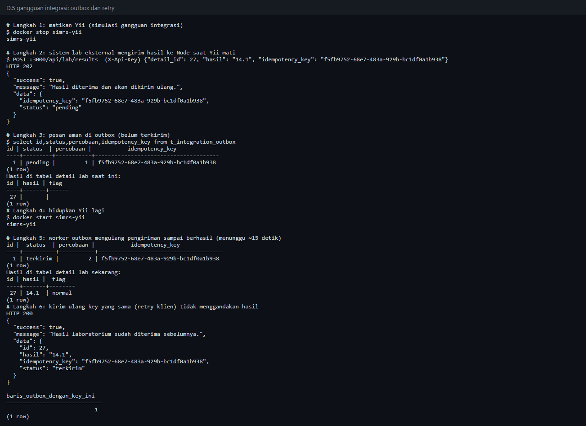
Bukti D.5: Yii dimatikan, hasil lab masuk outbox (pending), lalu terkirim otomatis setelah Yii hidup; kirim ulang key yang sama dijawab 200 tanpa duplikasi
6. Performa Aplikasi D.6
Performa Aplikasi: Bagaimana mengoptimalkan query database, proses pengambilan data, dan respons API ketika jumlah kunjungan serta transaksi meningkat?
Analisis internal: Optimasi Query Dashboard dan Isolasi Read-Only.
Masalah
Query agregasi dashboard (kunjungan per poli, pendapatan per hari, status pembayaran, tindakan terbanyak) berpotensi melakukan Seq Scan pada tabel transaksi besar dan berisiko membebani atau memodifikasi data transaksi bila memakai akun tulis yang sama.
Solusi Berlapis
Index komposit & partial index: migrasi m261122_010000_create_dashboard_indexes.php menambahkan 6 index strategis (idx_t_kunjungan_tgl_poli, idx_t_invoice_status, idx_t_pembayaran_dibayar_at, idx_t_tindakan_kunjungan_status, idx_t_resep_kunjungan_status, idx_t_invoice_item_invoice_sumber_aktif).
Predikat tanggal sargable: seluruh query dashboard menghindari pembungkusan kolom tanggal dengan fungsi (dibayar_at >= $1::date AND dibayar_at < ($2::date + INTERVAL '1 day')).
Role DB read-only: database/init/02-create-readonly-user.sql membuat role simrs_readonly (hanya SELECT) yang dipakai oleh readDb() di service-node/src/lib/db.ts.
Pagination dan filter tanggal di server: seluruh daftar transaksi (antrean, worklist, laboratorium, farmasi, billing) memakai backend-yii/common/ListQuery.php, dengan bawaan hari ini dan maksimal 100 baris per halaman.
OPcache, realpath cache, dan schema cache Yii: backend-yii/docker/php-performance.ini serta backend-yii/config/web.php. p95 endpoint daftar turun dari 1,4–3,2 detik menjadi 0,23–0,37 detik.
Bukti lengkap EXPLAIN (ANALYZE, BUFFERS) sebelum vs sesudah pada 15.000 baris sintetis: docs/performance.md (Q1 2,5× lebih cepat, Q2 6,7× lebih cepat, Q3 10,8× lebih cepat, Q4 scan kunjungan 8,6× lebih cepat), ditambah perbandingan latensi API sebelum dan sesudah di bagian 6.
Hasil pengukuran
EXPLAIN (ANALYZE, BUFFERS) pada data besar, dari docs/performance.md:
Query dashboard
Sebelum index
Sesudah index
Perbaikan
Kunjungan per poli (7 hari)
2,734 ms
1,090 ms
2,5x
Pendapatan per hari (7 hari)
9,991 ms (Seq Scan)
1,495 ms (Index Scan)
6,7x
Invoice belum dibayar
6,843 ms (Seq Scan)
0,635 ms (Index Scan)
10,8x
Tindakan terbanyak (7 hari)
scan kunjungan 3,850 ms
scan kunjungan 0,449 ms
8,6x pada scan
Latensi API Yii sebelum dan sesudah optimasi:
Endpoint Yii
Median sebelum
Median sesudah
p95 sebelum
p95 sesudah
Antrean poli
1.484 ms
225 ms
3.170 ms
363 ms
Worklist pemeriksaan
500 ms
236 ms
3.168 ms
264 ms
Worklist laboratorium
551 ms
272 ms
3.175 ms
374 ms
Antrean farmasi
546 ms
262 ms
2.056 ms
331 ms
Daftar invoice
286 ms
214 ms
1.468 ms
304 ms
Master pasien
322 ms
185 ms
1.380 ms
232 ms
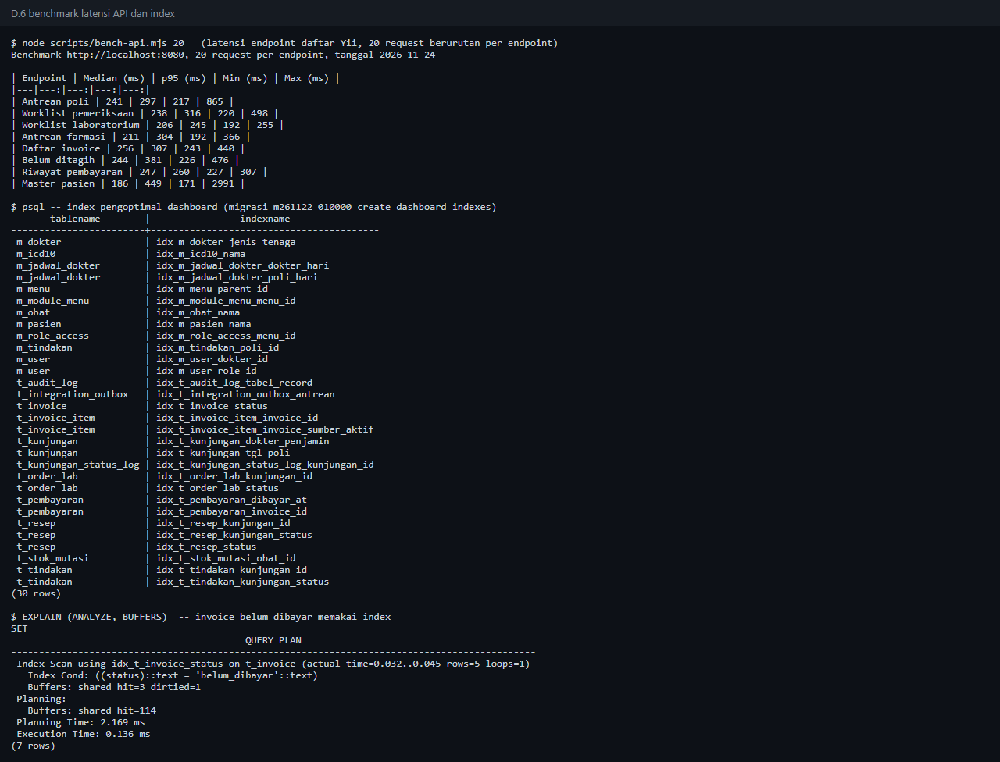
Bukti D.6: benchmark API, daftar index aktif, dan EXPLAIN memakai index
E. Ketentuan Teknis
Sepuluh ketentuan teknis pada instruksi beserta pemenuhannya.
No
Ketentuan pada instruksi
Pemenuhan
Bukti
E.1
Gunakan Yii1 atau Yii2 untuk backend utama dan business logic SIMRS.
Yii 2.0.55 pada PHP 8.3. Seluruh business logic dan penulisan data transaksi ada di backend-yii.
Wajib menjelaskan pembagian tanggung jawab antara Yii dan Node.js agar tidak terjadi duplikasi business logic maupun inkonsistensi data.
Yii satu-satunya penulis data transaksi dan pemilik business logic dan migrasi; Node hanya integrasi dan agregasi read-only lewat simrs_readonly. Matriks lengkap di bawah.
Endpoint idempoten PUT /transaction/hasil-lab/{id}, hitung flag
Menerima push eksternal, validasi, forward ke Yii, outbox, retry
Dashboard
Tidak menanggung agregasi berat
7 endpoint agregasi lewat simrs_readonly
Duplikasi logic dicegah: flag lab dan status order hanya dihitung di Yii; tagihan dan revisi billing hanya di Yii; Node hanya meneruskan dan menjumlahkan kolom snapshot. Kedua layanan memakai format respons yang sama.
modules/<domain>/<fitur>/: *Controller, *Service, model ActiveRecord
Controller hanya HTTP dan otorisasi; Service memegang logika bisnis dan transaksi; Model memegang relasi dan aturan data. Test unit per Service di tests/unit/.
Komponen reusable App* dan shadcn/ui; api-client satu pintu ke REST; RequireAuth dan PermissionGuard untuk akses.
database
migrations/ (26 file), seeds/, database/init/
Migrasi dan seed hanya dari Yii; skrip init membuat database test dan user read-only.
Konvensi
Conventional Commits (commitlint, husky), ESLint, Prettier, PHP-CS-Fixer, CI GitHub Actions
Satu sub-poin roadmap satu commit; CI menjalankan lint, test, dan build tiga lapisan.
2. Database F.2
Butir pada instruksi
Status
Bukti
Database schema dan relasi antartabel.
Terpenuhi
F.2 bagian Skema dan relasi; database/schema.sql
Entity Relationship Diagram (ERD).
Terpenuhi
F.2 bagian ERD; database/erd.md
File migration atau SQL untuk instalasi database.
Terpenuhi
26 file migrasi di bawah; database/schema.sql
Skema dan relasi
30 tabel bisnis: prefix m_ untuk master dan t_ untuk transaksi. Semua tabel memakai kolom audit (created_at, updated_at, created_by, updated_by); master memakai soft delete. Skema dikelola oleh 26 migrasi Yii di backend-yii/migrations/; ekspor lengkap di database/schema.sql.
Entity Relationship Diagram (ERD)
Diagram digambar dari definisi di database/erd.md. Tanda PK = primary key, FK = foreign key, UK = unique.
Penjelasan alur komunikasi React.js, Yii, Node.js, dan PostgreSQL.
Terpenuhi
Subbagian alur komunikasi
Dokumentasi endpoint API.
Terpenuhi
Lampiran A
Petunjuk instalasi dan konfigurasi aplikasi.
Terpenuhi
Subbagian instalasi
Penjelasan keputusan teknis yang digunakan.
Terpenuhi
Subbagian keputusan teknis
Diagram arsitektur aplikasi
React berkomunikasi dengan Yii (seluruh operasi bisnis) dan dengan Node (dashboard) lewat REST JSON dan JWT. Yii menerbitkan JWT; Node memverifikasinya dengan secret yang sama. Sistem lab eksternal memanggil Node dengan X-Api-Key. Node meneruskan hasil lab ke Yii. Yii membaca dan menulis PostgreSQL dan memegang migrasi. Node menulis hanya t_integration_outbox dan membaca sisanya sebagai simrs_readonly.
Penjelasan alur komunikasi React.js, Yii, Node.js, dan PostgreSQL
Urutan nyata satu kunjungan, dari pendaftaran sampai pembayaran:
React mengirim POST /transaction/pendaftaran ke Yii; Yii mengunci jadwal dan nomor antrean, lalu menulis t_kunjungan ke PostgreSQL.
Dokter menyimpan pemeriksaan, diagnosis, tindakan, resep, dan order lab lewat Yii; Yii menyalin tarif dan harga dan mencatat audit log.
Hasil lab diinput petugas lewat Yii, atau dikirim sistem eksternal ke Node (POST /api/lab/results); Node meneruskan ke Yii dan memakai outbox bila Yii gagal.
Farmasi memproses resep lewat Yii; Yii mengunci obat, mengurangi stok, dan mencatat mutasi.
Kasir membentuk invoice dan mencatat pembayaran lewat Yii dengan Idempotency-Key.
Dashboard di React memanggil Node; Node membaca PostgreSQL sebagai simrs_readonly dan mengembalikan agregasi.
Seluruh screenshot pada B.1 sampai B.9 dan bagian ini
Bukti alur pelayanan mulai dari pendaftaran hingga pembayaran.
Terpenuhi
Subbagian alur 38 langkah
Bukti invoice atau struk pembayaran.
Terpenuhi
Subbagian invoice dan bukti pembayaran
Bukti implementasi backend services Node.js.
Terpenuhi
Subbagian Node.js dan bagian C
Screenshot tampilan aplikasi
Screenshot tiap layar ada pada bagian B.1 sampai B.9; sidebar tiap role pada B.9.
Bukti alur pelayanan mulai dari pendaftaran hingga pembayaran
Skrip scripts/proof/flow.py menjalankan antarmuka secara nyata untuk pasien Adi Kusuma (RM000041) setelah reset dan seed ulang: kunjungan RJ202611150001, antrean U-001, invoice INV202611150001 bernilai Rp 90.000 (pendaftaran 25.000 + tindakan 105.000 + laboratorium 70.000 + obat 15.000), dibayar 1 kali sampai lunas.
Tahap 1: Pendaftaran dan antrean
Petugas pendaftaran mencari pasien, memilih poli dan jadwal dokter, mendaftarkan kunjungan, lalu memanggil pasien.
Mencari pasien dengan No. RM RM000041Memilih tanggal, poli, jadwal dokter (dokter, jam praktik, kuota), dan penjaminTiket antrean U-001 untuk Adi Kusuma, kunjungan RJ202611150001; riwayat kunjungan bertambahAntrean Poli: status Menunggu
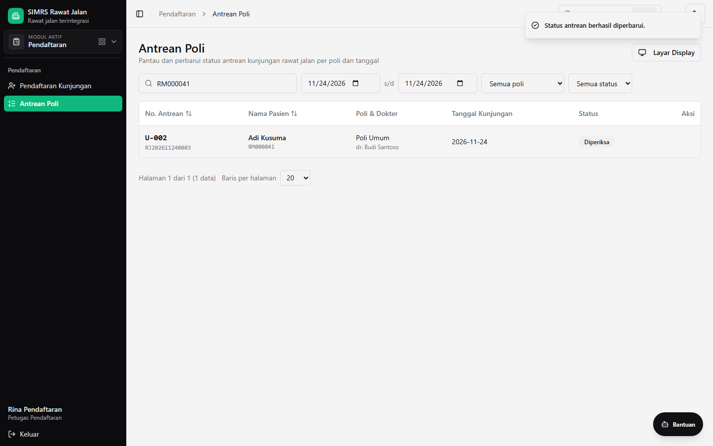
Setelah Panggil / Periksa: status Diperiksa
Tahap 2: Pemeriksaan dan rekam medis
Dokter membuka pasien dari worklist dan mengisi anamnesis, tanda vital, pemeriksaan fisik, dan diagnosis.
Worklist dokterKeluhan utama dan anamnesisTanda vital
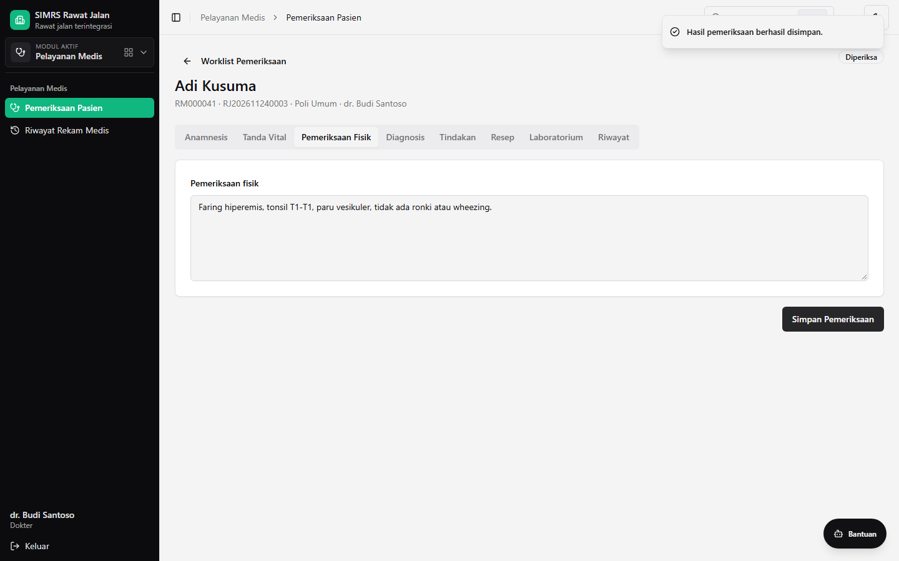
Pemeriksaan fisik tersimpanDiagnosis utama J06.9 dan sekunder J00
Tahap 3: Tindakan medis
Dokter menambah dua tindakan dari master; tarif otomatis menjadi komponen tagihan.
Daftar tindakan master beserta tarifKonsultasi Dokter Umum (Rp 50.000) dan Nebulizer (Rp 55.000) tercatat
Tahap 4: Resep obat
Dokter membuat resep Paracetamol; sistem menampilkan stok saat memilih dan menghitung total.
Daftar obat dengan stok dan harga
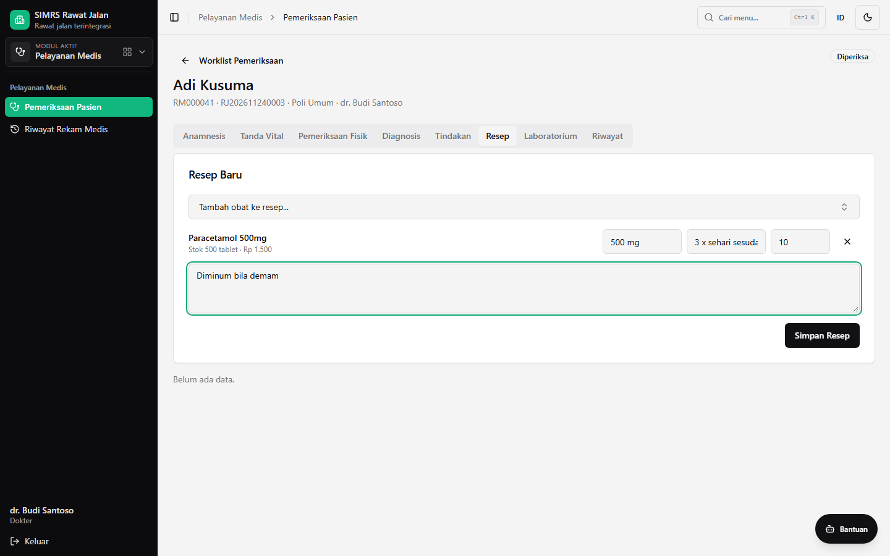
Dosis, frekuensi, jumlah, catatanResep tersimpan, status Baru
Tahap 5: Order dan hasil laboratorium
Dokter memesan Hemoglobin dan Leukosit; petugas laboratorium menginput hasil dan sistem memberi flag.
Dokter memilih pemeriksaanOrder terkirimWorklist laboratoriumHasil pertama tersimpanOrder Selesai; Leukosit bertanda Tinggi
Tahap 6: Farmasi
Petugas farmasi memproses lalu menyerahkan resep; stok obat berkurang.
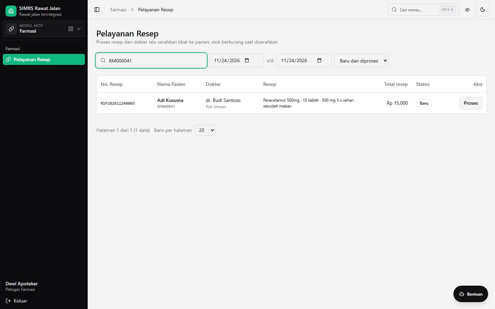
Antrean resep: status BaruStatus DiprosesStatus DiserahkanStok Paracetamol 490 (sebelumnya 500)
Tahap 7: Invoice
Kasir membentuk invoice yang menggabungkan empat sumber biaya dan mengunci kunjungan.
Kunjungan muncul di Belum DitagihDialog validasi kunjungan; semua order sudah selesaiInvoice terbentuk, status Belum DibayarRincian biaya: total Rp 90.000
Tahap 8: Pembayaran bertahap
Kasir membayar sebagian secara tunai, lalu melunasi sisanya secara non-tunai. Ada 1 pembayaran: PAY202611150001 tunai Rp 90.000.
Dialog Catat Pembayaran
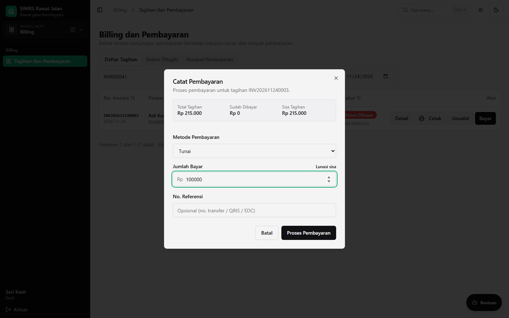
Pembayaran tunai Rp 100.000
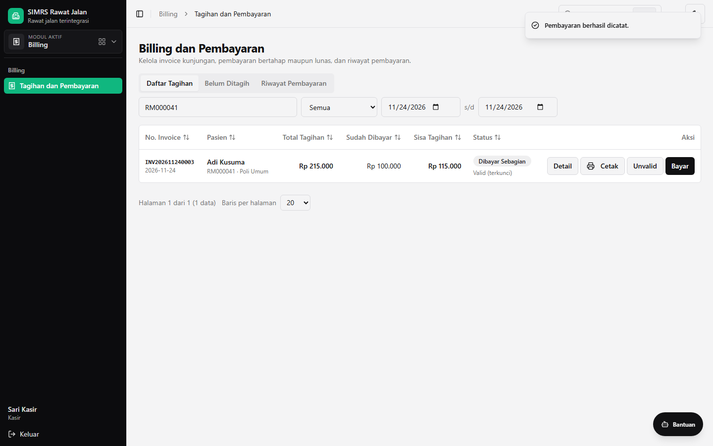
Status Dibayar Sebagian
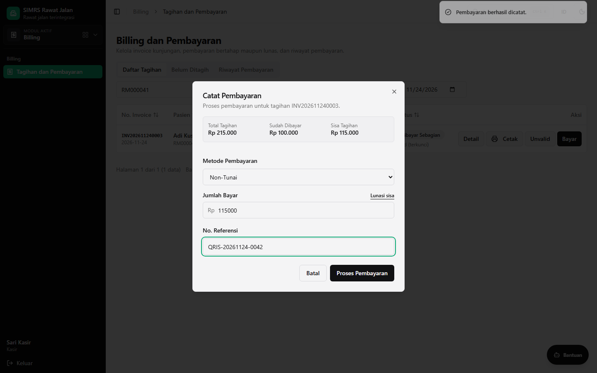
Lunasi sisa, non-tunai, nomor referensi QRISStatus LunasRiwayat pembayaran
Tahap 9: Invoice dan bukti pembayaran
Dokumen cetak (tombol Cetak dan Export PDF).
Bukti pembayaranInvoice berstatus Lunas
Tahap 10: Hasil akhir
Riwayat medis menyatukan seluruh hasil. Kunjungan berstatus Selesai otomatis setelah lunas.
Riwayat rekam medis pasienAntrean tidak lagi menampilkan kunjungan yang sudah lunasDashboard memuat kunjungan, tindakan, dan pendapatan hari ini
Panggilan HTTP nyata ke service Node: 200, 401, 422, dan status kontainer
5. Pengujian F.5
Butir pada instruksi
Status
Bukti
Test case untuk fitur utama.
Terpenuhi
Subbagian daftar test case
Bukti pengujian API menggunakan Postman.
Terpenuhi
Subbagian Postman
Unit test atau integration test untuk proses transaksi penting.
Terpenuhi
Subbagian unit dan integration test
Ringkasan hasil
Jenis
Hasil (data seed bersih)
PHPUnit (Yii, transaksi penting)
134 test, 446 assertion, OK
Vitest (Node, supertest + PostgreSQL)
38 test lulus
Vitest (React)
78 test lulus
Postman CLI 1.93.1
35 request, 45 assertion, 0 gagal
Newman
35 request, 45 assertion, 0 gagal
Konkurensi D.1 sampai D.4
Semua skrip lulus
Bukti pengujian API menggunakan Postman
Koleksi postman/simrs.collection.json menjalankan alur penuh lewat API: kesehatan layanan, login, master, pendaftaran, pemeriksaan, tindakan, resep, farmasi, lab, billing, pembayaran bertahap, dashboard, dan kasus ditolak (401, 403, 409, 422). Dijalankan dengan Postman CLI:
postman collection run postman/simrs.collection.json -e postman/local.environment.json
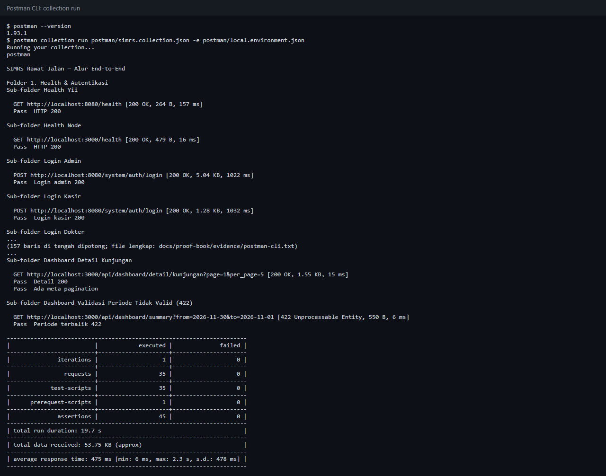
Postman CLI: versi, request, dan ringkasan 35 request, 45 assertion, 0 gagal
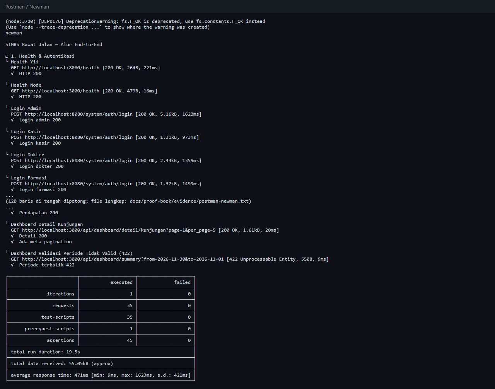
Hasil yang sama dengan Newman
Unit test atau integration test untuk proses transaksi penting
PHPUnit (Yii)Vitest (Node): 38 test lulus. Baris stderr berasal dari test penanganan error yang sengaja memicu error 500 untuk memastikan pesan internal tidak bocor ke responsVitest (React)
Test case untuk fitur utama
ID
Skenario
Hasil yang diharapkan
Status
TC-AUTH-01
Login dengan akun valid
Status 200, JWT diterima, sidebar menampilkan modul & menu sesuai role
Lulus
TC-AUTH-02
Login dengan password salah
Status 401, pesan kredensial salah, token tidak diberikan
Lulus
TC-AUTH-03
Akses endpoint tanpa token
Status 401
Lulus
TC-AUTH-04
Cek RBAC menu (403)
Status 403, pesan tidak memiliki akses
Lulus
TC-AUTH-05
Ubah matriks hak akses role
Perubahan tersimpan di m_role_access dan langsung berlaku pada request berikutnya
Lulus
TC-MST-01
Tambah pasien & No. RM otomatis
Status 201, no_rm terbentuk otomatis (RM000xxx); NIK duplikat ditolak 422
Lulus
TC-MST-02
Soft delete master data
deleted_at terisi, tidak muncul di daftar aktif, data transaksi lama tetap utuh
Lulus
TC-MST-03
Validasi bentrok jadwal dokter
Ditolak 422 / 409 dengan pesan jadwal bentrok
Lulus
TC-MST-04
Penyesuaian stok obat & mutasi
Stok berubah dan tercatat baris baru di t_stok_mutasi
Lulus
TC-REG-01
Pendaftaran kunjungan normal
Status 201, no_kunjungan dan no_antrean berurutan, status menunggu
Lulus
TC-REG-02
Tolak tanggal kunjungan lampau
Ditolak 422
Lulus
TC-REG-03
Pendaftaran ganda & kuota paralel (D.1)
Pasien sama di poli & tanggal sama hanya 1 sukses (409 untuk duplikat); kuota tidak terlampaui dan nomor antrean unik
Lulus
TC-REG-04
Transisi status antrean
Transisi valid 200 + tercatat di t_kunjungan_status_log; selesai manual dan transisi tidak sah ditolak. Kunjungan baru selesai saat invoicenya lunas
Lulus
TC-EMR-01
Worklist dokter terisolasi
Hanya menampilkan kunjungan milik DR001; akses kunjungan dokter lain ditolak 403
Lulus
TC-EMR-02
Simpan pemeriksaan & tanda vital
Tersimpan 200; bila td_diastolik >= td_sistolik ditolak 422
Lulus
TC-EMR-03
Simpan diagnosis ICD-10
Tersimpan 200; tanpa diagnosis utama atau > 1 utama ditolak 422
Lulus
TC-EMR-04
Tambah & batal tindakan medis
Tarif disalin sebagai snapshot; pembatalan mengubah status ke batal tanpa hapus baris fisik
Lulus
TC-FAR-01
Buat resep & validasi stok
Ditolak 422 dengan pesan stok tidak cukup
Lulus
TC-FAR-02
Proses dan serahkan obat
Status baru → diproses → diserahkan, stok obat berkurang, tercatat di t_stok_mutasi
Lulus
TC-FAR-03
Penyerahan obat paralel (D.2)
Tepat 1 sukses (200), 1 ditolak (409), stok akhir 0 (tidak minus), 1 mutasi keluar
Lulus
TC-LAB-01
Order lab & input hasil + flag otomatis
Flag normal/tinggi/rendah dihitung otomatis, status order menjadi selesai, hasil tampil di riwayat medis
Lulus
TC-LAB-02
Push hasil lab via Node (X-Api-Key)
Node meneruskan ke Yii (200); key sama dikirim ulang tetap aman tanpa duplikasi
Lulus
TC-LAB-03
Ketahanan outbox saat Yii gagal (D.5)
Node balas 202 + simpan di t_integration_outbox (pending); worker retry sampai terkirim
Lulus
TC-BIL-01
Pembentukan invoice 4 sumber
Status 201, 4 sumber biaya terkumpul, total = jumlah seluruh subtotal
Lulus
TC-BIL-02
Pembayaran bertahap hingga lunas
Status berubah belum_dibayar → dibayar_sebagian → lunas; bayar melebihi sisa ditolak 422
Lulus
TC-BIL-03
Pencegahan pembayaran ganda (D.3)
Key sama: 1×201, 4×200, 1 no_pembayaran; key beda melebihi sisa: 1×201, 4×409, total_bayar == total
Lulus
TC-BIL-04
Revisi tagihan & audit log (D.4)
Saat valid ditolak 409; setelah Unvalid item lama is_void = true dengan alasan_void, total turun, tercatat di t_audit_log; setelah lunas kunjungan selesai dan semua perubahan maupun Unvalid ditolak 409
Lulus
TC-BIL-06
Catatan kasir sebelum invoice/Valid
Dialog menampilkan peringatan merah per transaksi; kasir tetap bisa menekan "Tetap Lanjutkan"; tanpa peringatan dialog menyatakan semua order selesai
Lulus
TC-BIL-07
Pasien lunas hanya tampil di billing
Kunjungan selesai tidak muncul di antrean, worklist lab, dan antrean farmasi, tetapi tetap ada di Daftar Tagihan
Lulus
TC-BIL-05
Cetak invoice dan bukti pembayaran
Tata letak rapi dengan .print-sheet, sidebar/header/tombol tersembunyi via print:hidden
Lulus
TC-DSH-01
Akses dashboard & validasi periode
Kartu KPI, grafik, dan tabel rincian berubah sesuai periode; periode invalid dibalas 422
Lulus
TC-DSH-02
Isolasi read-only & index (D.6)
DELETE ditolak permission denied; query memakai idx_t_kunjungan_tgl_poli, idx_t_pembayaran_dibayar_at, idx_t_invoice_status
Lulus
G. Ketentuan Pengerjaan
Butir pada instruksi
Ketentuan
Status
Bukti
Durasi pengerjaan: 3 × 24 jam (72 jam kalender) sejak instruksi diterima.
Terpenuhi
Ditentukan jadwal pengumpulan peserta; tidak dibuktikan oleh dokumen ini
Gunakan data dummy untuk kebutuhan pengujian.
Terpenuhi
Seluruh data dari php yii seed (50 pasien, 5 dokter, 4 poli, 60 kunjungan)
Silakan kirim hasil pengerjaan ke email: inovamedika.career@gmail.com
Terpenuhi
Siap dikirim
Format subjek: Senior Programmer_Pengumpulan Real Case Test_Nama Lengkap
Terpenuhi
Isi Nama Lengkap saat mengirim
Catatan penilaian
Fokus penilaian
Status
Bukti
Kemampuan menyusun alur sistem dan logika pemrograman.
Postman dijalankan lewat Postman CLI dan Newman (baris perintah); collection dan environment dapat diimpor ke aplikasi Postman.
Bukti D.1 sampai D.4 berupa skrip konkurensi yang memanggil API; bukti D.5 berupa demonstrasi langsung dengan mematikan Yii.
Seluruh data berupa data dummy hasil seed.
Pengumpulan (G): kirim ke inovamedika.career@gmail.com dengan subjek Senior Programmer_Pengumpulan Real Case Test_<Nama Lengkap>.
Diagram arsitektur dan workflow digambar sebagai SVG; ERD digambar dari database/erd.md.
Lampiran A. Dokumentasi endpoint API
Kutipan lengkap docs/api/yii.md dan docs/api/node.md. Spesifikasi OpenAPI service Node: service-node/openapi.yaml (juga di http://localhost:3000/openapi.yaml).
A.1 Backend Yii2
Seluruh endpoint mengembalikan format JSON seragam:
Parameter boolean query dikirim sebagai 1/0 atau true/false.
Endpoint CRUD standar menyediakan: GET /x?q=&page=&per_page=, GET /x/{id}, POST /x, PUT /x/{id}, DELETE /x/{id} (soft delete).
Endpoint daftar berhalaman membalas meta: { page, per_page, total }. Nilai per_page dibatasi maksimal 100, dengan bawaan 20.
Filter tanggal_dari dan tanggal_sampai memakai format YYYY-MM-DD dan bersifat inklusif. Tanggal yang tidak valid menghasilkan daftar kosong, bukan error.
Izin menu dashboard-keuangan:read membatasi data pendapatan, tagihan, dan pembayaran di dashboard (dicek oleh service Node). Menu ini tidak tampil di sidebar dan bawaannya hanya diberikan ke role admin dan kasir.
Daftar antrean kunjungan berhalaman. Kata kunci q mencari no. kunjungan, no. RM, atau nama pasien. Setiap item memuat kode_antrean (prefix poli + nomor, mis. U-001) dan penjamin.
PUT
/transaction/antrean/{id}/status
antrean:update
Body: { status }. Transisi sah: menunggu → diperiksa/batal dan diperiksa → batal. Status selesai tidak bisa dipilih manual; kunjungan otomatis selesai saat invoicenya lunas.
Daftar kunjungan non-batal yang belum dibuatkan invoice, berhalaman.
GET
/transaction/invoice/{id}
billing:read
Detail invoice beserta item aktif/void dan daftar pembayaran.
POST
/transaction/invoice/{kunjunganId}
billing:create
Membentuk invoice dari 4 sumber biaya (pendaftaran, tindakan, lab, obat) sekaligus memvalidasi kunjungan (is_valid = true). Duplikat ditolak 409.
GET
/transaction/invoice/peringatan?kunjungan_id=
billing:read
Daftar teks transaksi belum tuntas (pasien belum diperiksa, hasil pemeriksaan belum disimpan, order lab belum selesai, resep belum diserahkan) untuk catatan kasir. Array kosong berarti semua order sudah selesai.
PUT
/transaction/invoice/{id}/valid
billing:update
Mengunci kunjungan dari order baru dokter. Selama valid, simpan pemeriksaan, diagnosis, tindakan, resep, dan order lab dibalas 409.
PUT
/transaction/invoice/{id}/unvalid
billing:update
Membuka kunci agar dokter bisa menambah transaksi lagi; tagihan disinkronkan otomatis. Ditolak 409 bila invoice sudah lunas (kunjungan selesai permanen).
GET
/transaction/invoice/{id}/audit-log
billing:read
Jejak perubahan tagihan & klinis kunjungan dari t_audit_log (D.4).
**Integrasi lab (/api/lab/*):** kirim header X-Api-Key: <salah satu nilai LAB_API_KEYS>. Key yang salah atau tidak ada dibalas 401 dengan pesan "API key tidak valid atau tidak dikirim (header X-Api-Key).".
**Dashboard (/api/dashboard/*):** kirim header Authorization: Bearer <JWT dari Yii>. Secret dan issuer JWT sama dengan Yii. Selain itu, role pengguna harus punya izin dashboard:read di m_role_access. Izin yang tidak ada dibalas 403.
Kode status: | Kode | Arti | |---|---| | 200 | OK | | 202 | Accepted: hasil lab tersimpan di outbox dan akan dikirim ulang | | 400 | Body bukan JSON yang valid | | 401 | Tidak terautentikasi | | 403 | Tidak punya izin | | 404 | Data atau route tidak ditemukan | | 409 | Idempotency-Key bentrok | | 422 | Validasi gagal | | 500 | Kesalahan tak terduga; detailnya hanya dicatat di log server |
Format tanggal:YYYY-MM-DD. Panjang periode dashboard maksimal 366 hari.
1. Kesehatan Sistem
Method
Path
Izin
Keterangan
GET
/health
Publik
{ service: "service-node" }
2. Integrasi Laboratorium (/api/lab)
Method
Path
Izin
Keterangan
GET
/api/lab/orders?status=diminta,diproses
API key
Daftar order lab beserta pasien dan detail pemeriksaan. status diisi satu atau beberapa nilai diminta, diproses, selesai dipisah koma (bawaan diminta,diproses).
POST
/api/lab/results
API key
Body: { detail_id, hasil, idempotency_key }. Hasil disimpan dulu ke outbox (t_integration_outbox), lalu diteruskan ke Yii PUT /transaction/hasil-lab/{detail_id}.
POST /api/lab/results
Aturan field:
detail_id adalah bilangan bulat positif.
hasil berisi 1–100 karakter.
idempotency_key berisi 8–100 karakter.
Respons yang mungkin:
Status
Kondisi
200
Hasil diterima Yii dan order diperbarui.
202
Yii sedang tidak dapat diakses. Hasil aman di outbox dan worker mengirim ulang otomatis (backoff 5 s, 10 s, 20 s, … sampai 300 s).
404 / 422
Ditolak Yii, misalnya detail tidak ditemukan atau order sudah selesai. Baris outbox ditandai gagal.
409
idempotency_key yang sama sudah pernah dipakai dengan detail_id atau hasil yang berbeda.
Kalau request dengan key dan isi yang sama dikirim ulang, data tidak tercatat dua kali. Pengamannya ada dua:
Node memakai unique idempotency_key di outbox.
Yii memakai unique idempotency_key di t_order_lab_detail.
3. Dashboard (/api/dashboard)
Semua endpoint di bawah wajib JWT dan izin dashboard:read. Data keuangan (pendapatan, tagihan, pembayaran) juga butuh izin dashboard-keuangan:read. Bawaannya hanya role admin dan kasir yang punya izin ini (migrasi m261122_040000_add_dashboard_keuangan_menu).
Parameter periode yang bisa dipakai di setiap endpoint (opsional):
Parameter
Isi
from
Tanggal awal, YYYY-MM-DD
to
Tanggal akhir, YYYY-MM-DD
dokter_id
ID dokter
penjamin
umum, bpjs, atau asuransi
Method
Path
Izin tambahan
Keterangan
GET
/api/dashboard/filters
-
Pilihan filter dokter dan penjamin.
GET
/api/dashboard/summary
-
Ringkasan: jumlah kunjungan, jumlah tindakan, pendapatan, total tagihan, dan status invoice. Tanpa dashboard-keuangan, nilai total_pendapatan, total_tagihan, dan invoice_per_status berisi null.
GET
/api/dashboard/kunjungan-per-poli
-
Jumlah kunjungan per poli.
GET
/api/dashboard/tindakan
-
Rekap tindakan medis.
GET
/api/dashboard/pendapatan
dashboard-keuangan
Ringkasan pendapatan per periode. Tanpa izin: 403.
GET
/api/dashboard/obat
-
Rekap penggunaan obat.
GET
/api/dashboard/pembayaran
dashboard-keuangan
Rekap status dan metode pembayaran. Tanpa izin: 403.
GET
/api/dashboard/detail/{jenis}
dashboard-keuangan untuk pendapatan dan pembayaran
Rincian data berhalaman. jenis bisa kunjungan, tindakan, pendapatan, obat, atau pembayaran. Parameter tambahan: page, per_page (maks 100), poli_id, status.
Contoh request:
GET /api/dashboard/summary?from=2026-11-01&to=2026-11-22
Authorization: Bearer <JWT>
Koleksi Postman untuk semua endpoint ini ada di postman/simrs.collection.json.